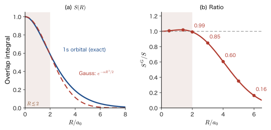
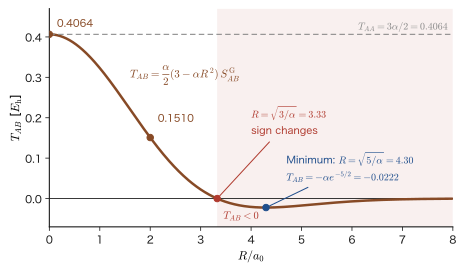

Chapter 39Chemical Bonding (2) — The Molecular Orbital Method, the Hydrogen Molecular Ion, and Overlap Integrals
When two hydrogen atoms approach each other, why do they form a single hydrogen molecule $\mathrm{H_2}$ that is more stable than the two separated atoms? In high school chemistry we learn that “electrons are shared to form an electron pair.” The valence bond (VB) method that we studied in the previous chapter (Chapter 38) restates exactly this picture in the language of quantum mechanics: it is the idea of “assigning an electron pair to each bond.” In this chapter we take the opposite starting point. In the molecular orbital (MO) method, the electrons are not assigned to particular bonds but are placed in a single orbital spread over the whole molecule. Just as the electrons in an atom occupy atomic orbitals (1s, 2p, …), the electrons in a molecule are taken to occupy molecular orbitals.
Classical physics has no tool that can answer this question. Point charges cannot be arranged stably at rest (Earnshaw's theorem), so the picture in which two protons and one electron form a stable assembly through the Coulomb force alone does not emerge from classical mechanics. In quantum mechanics, the electron spreads as a wave around the two protons, and when the two atomic orbitals overlap in phase, the electron gathers between the nuclei and the energy is lowered (bonding orbital). When they overlap out of phase, a node forms between the nuclei and the energy rises (antibonding orbital). The quantity that expresses the magnitude of this “overlap” as a single number is the overlap integral $S$. Both the strength of the bond and the instability of the antibonding orbital depend strongly on $S$.
In this chapter we treat the simplest molecule, the hydrogen molecular ion $\mathrm{H_2^+}$ (two protons and one electron), carefully by the molecular orbital method. Since $\mathrm{H_2^+}$ has no electron–electron repulsion, its Schrödinger equation can (in principle) be solved exactly. We nevertheless deliberately use the approximation of a linear combination of atomic orbitals (LCAO), because this approximation is the starting point of electronic-structure calculations for all molecules and solids (the Roothaan–Hall equations of Chapter 37, the companion volume “Computational Materials Science” (AD 05), and the band theory from Chapter 41 onward). The overlap integral $S(R)$ is computed by hand, writing out every intermediate equation, using confocal ellipsoidal coordinates, a coordinate system specific to two-center problems.
Furthermore, we confirm that with Gaussian functions the same integrals (and the kinetic-energy integral) can be computed by completing the square alone, without any change of coordinates, and that this is the standard of modern computational chemistry.
- The idea of the molecular orbital method (the electrons spread over the whole molecule) and how it differs from the valence bond method; the fact that the molecular-orbital wave function of $\mathrm{H_2}$ contains the covalent term and the ionic term with equal weight
- The Schrödinger equation for $\mathrm{H_2^+}$ (nuclei fixed in the Born–Oppenheimer approximation) and its separability in confocal ellipsoidal coordinates; the values of the exact solution ($R_{\mathrm e}=2.00\,a_0$, $D_{\mathrm e}=2.79\ \mathrm{eV}$)
- The LCAO approximation $\psi_\pm=C_\pm(\phi_A\pm\phi_B)$ and the normalization constant $C_\pm=1/\sqrt{2(1\pm S)}$; the shapes of the bonding and antibonding orbitals, and $E_\pm$ from the linear variational method (secular equation)
- The definition of the confocal ellipsoidal coordinates $(\mu,\nu,\varphi)$; deriving the Jacobian (volume element) from a 3×3 determinant; computing the overlap integral $S=(1+R/a_0+R^2/3a_0^2)\,e^{-R/a_0}$ by hand with the substitution $u=\cosh\mu$
- The LCAO energy curve $E_\pm(R)$ of $\mathrm{H_2^+}$: derivation of the Coulomb-type and resonance-type integrals $J'$ and $K'$; $R_{\mathrm e}=2.493\,a_0$, $D_{\mathrm e}=1.76\ \mathrm{eV}$, and the vibrational wavenumber $1816\ \mathrm{cm^{-1}}$
- The Gaussian product theorem and the overlap integral $S_{AB}$ with Gaussian functions; derivation of the kinetic-energy matrix element $T_{AB}=\dfrac{\alpha_A\alpha_B}{\alpha_A+\alpha_B}\Bigl(3-\dfrac{2\alpha_A\alpha_B}{\alpha_A+\alpha_B}R^2\Bigr)S^{\mathrm G}_{AB}$; the attraction to the nuclei (Boys function) and $\mathrm{H_2^+}$ with STO-1G (a basis in which the 1s Slater-type orbital $e^{-\zeta r/a_0}$ is approximated by a single Gaussian function, Chapter 32)
Source notes: Yasuhide Mochizuki, Physics Notes: Quantum Mechanics 3, pp. 81–86.
39.1 The Idea of the Molecular Orbital Method — Electrons Spread over the Whole Molecule
39.1.1 What is the molecular orbital method?
In the valence bond (VB) method of the previous chapter, electrons were assigned bond by bond. For $\mathrm{H_2}$, for example, we think of electron 1 as occupying the 1s orbital of hydrogen atom A and electron 2 as occupying the 1s orbital of hydrogen atom B, and these two electrons form a “pair” that constitutes the bond. The electrons that make the bond “belong” to the two atoms from the very beginning.
In the molecular orbital (MO) method, electrons are not regarded as belonging to a particular bond; they are treated as something spread over the whole molecule. Just as an electron in an atom occupied a one-electron wave function in the field created by a single atomic nucleus (an atomic orbital, AO), an electron in a molecule is considered to occupy a one-electron wave function in the field created by several atomic nuclei, that is, a molecular orbital (MO).
Definition 39.1: Molecular orbitals and the LCAO approximation
The wave function $\psi_i(\bm{r})$ of one electron moving in the field of the several atomic nuclei contained in a molecule (together with the average field created by the other electrons) is called a molecular orbital. In this book, a molecular orbital is denoted $\psi_i$ and an atomic orbital (basis function) is denoted $\phi_\mu$. The method of approximating a molecular orbital by a linear combination of atomic orbitals
$$ \psi_i(\bm{r})=\sum_{\mu}c_{\mu i}\,\phi_\mu(\bm{r}) \qquad(c_{\mu i}\text{ is the expansion coefficient}) $$is called the LCAO (linear combination of atomic orbitals) approximation.
The simplest molecule is the hydrogen molecular ion $\mathrm{H_2^+}$, which consists of two protons and one electron. This molecule contains all the essential features of a chemical bond (bonding and antibonding orbitals, the overlap integral, and the effect of resonance), and since there is no repulsion between electrons, we can follow every step of the calculation. The tools we learn in the LCAO treatment of $\mathrm{H_2^+}$ (the secular equation, the overlap integral, and basis functions) become, just as they are, the tools for investigating the structure of complex molecules and solids. The protagonist of this chapter is $\mathrm{H_2^+}$.
Notation: $\phi$ and $\psi$, and the distance from a nucleus
In this book we use $\phi_\mu$ for atomic orbitals and basis functions, and $\psi_i$ for one-electron eigenfunctions and molecular orbitals (the convention of Part VII). The azimuthal angle is $\varphi$, a letter different from the $\phi$ of wave functions. In this chapter, $\phi_A$ and $\phi_B$ are the 1s orbitals of the hydrogen atoms around nuclei A and B:
$$ \phi_A(\bm{r})=\phi_{1s}(r_A)=\frac{1}{\sqrt{\pi a_0^3}}\,e^{-r_A/a_0},\qquad \phi_B(\bm{r})=\phi_{1s}(r_B),\qquad r_A=\abs{\bm{r}-\bm{R}_A},\ \ r_B=\abs{\bm{r}-\bm{R}_B} $$Here $r_A$ and $r_B$ are the distances from the electron's position $\bm r$ to nuclei A and B; they are not electron labels. Also, this book denotes the elementary charge by $e_0$ and the Bohr radius by $a_0=4\pi\varepsilon_0\hbar^2/(m_{\mathrm e}e_0^2)$. The related simulator writes the Bohr radius as $a_{\mathrm B}$, but it is the same quantity. In atomic units (Chapter 33) we set $a_0=1$. The internuclear distance is $R=\abs{\bm{R}_A-\bm{R}_B}$.
39.1.2 How the molecular orbital method differs from the valence bond method, as seen in $\mathrm{H_2}$
The difference between the two methods is clearest in the hydrogen molecule $\mathrm{H_2}$, which has two electrons. Consider the bonding orbital (the sum of two 1s orbitals) that we treat in detail in the following sections:
$$ \psi_+(\bm{r})=C_+\bigl(\phi_A(\bm{r})+\phi_B(\bm{r})\bigr) $$Suppose we put two electrons with opposite spins into it ($C_+$ is the normalization constant). The spatial part for electron 1 and electron 2 is $\psi_+(1)\,\psi_+(2)$. Expanding this, we obtain
\begin{equation} \psi_+(1)\,\psi_+(2)=C_+^2\Bigl\{\underbrace{\bigl[\phi_A(1)\phi_B(2)+\phi_B(1)\phi_A(2)\bigr]}_{\text{covalent term}}+\underbrace{\bigl[\phi_A(1)\phi_A(2)+\phi_B(1)\phi_B(2)\bigr]}_{\text{ionic term}}\Bigr\} \label{eq:39-mo-expand} \end{equation}Here $\phi_A(1)$ means that electron 1 occupies the 1s orbital around nucleus A. Looking more closely, the four terms on the right-hand side correspond to all four ways of assigning the two electrons to the two nuclei (Figure 39.1), and they are added with the same coefficient.
- Covalent term: one electron is on atom A and the other is on atom B ($\phi_A(1)\phi_B(2)$ and $\phi_B(1)\phi_A(2)$). This is exactly the Heitler–London wave function of the previous chapter (the valence bond treatment of $\mathrm{H_2}$).
- Ionic term: both electrons are around the same nucleus ($\phi_A(1)\phi_A(2)$ and $\phi_B(1)\phi_B(2)$). That is, these are the ion-pair states $\mathrm{H^-H^+}$ and $\mathrm{H^+H^-}$.
In other words, the $\mathrm{H_2}$ wave function of the molecular orbital method contains the covalent-bond term and the ionic-bond term with the same weight (50% each). The valence bond wave function, on the other hand, consists of the covalent term only. Here “50% each” means that the four terms of Eq. \eqref{eq:39-mo-expand} have the same coefficient; when the overlap integral $S$ is small (the internuclear distance $R$ is large), the covalent and ionic terms are nearly orthogonal, so the weights as probabilities are also nearly 50% each.
Discussion: Both methods describe the bond correctly only “halfway”
If we increase the internuclear distance $R$ and pull the molecule apart into two hydrogen atoms (dissociate it), the correct wave function should have one electron on each atom, that is, only the covalent term (because it costs extra energy for both electrons to gather on one atom alone and form $\mathrm{H^-}$). Therefore the molecular orbital wave function, which still contains 50% of the ionic term, is wrong in the limit of bond breaking. Near the equilibrium internuclear distance, on the other hand, the real molecule has an ionic component in which an electron is shifted somewhat toward the other atom, so the valence bond wave function, which contains no ionic term at all, slightly underestimates the bond.
If we completely “optimize” the two methods, both arrive at the same wave function. That is, if we do not fix the weights of the covalent and ionic terms but determine them so that the energy is minimized, the molecular orbital method and the valence bond method give the same result. In this sense, the two methods differ only in the starting point of the same theory: the molecular orbital method approaches the correct answer from the side of “too much ionic term,” and the valence bond method from the side of “too little ionic term.”
| Wave function | $R_{\mathrm e}$ ($a_0$) | $R_{\mathrm e}$ (Å) | $D_{\mathrm e}$ (eV) | Energy at $R=8\,a_0$ ($E_{\mathrm h}$) |
|---|---|---|---|---|
| Valence bond method (covalent term only) | 1.647 | 0.872 | 3.19 | $-0.9898$ |
| Molecular orbital method (covalent + ionic terms, equal weights) | 1.610 | 0.852 | 2.74 | $-0.7452$ |
| Weights of the two terms optimized (covalent + ionic terms) | 1.674 | 0.886 | 3.27 | $-0.9898$ |
| Experiment | 1.401 | 0.741 | 4.75 | $-1.0000$ ($=2\times(-\tfrac12)$) |
In Table 39.1, $D_{\mathrm e}$ is the lowering of the energy from that of the state dissociated into two hydrogen atoms (the reference is twice the energy $-0.4949\,E_{\mathrm h}$ of the hydrogen atom in the approximation that represents the 1s orbital by three Gaussian functions (STO-3G)). Both methods give only 60–70% of the experimental $D_{\mathrm e}=4.75\ \mathrm{eV}$. This is because the orbital exponent of the 1s orbital was fixed at $\zeta=1$ (the same as in an isolated hydrogen atom), so the effect of the orbitals shrinking inside the molecule and electron correlation are missing (we examine the shrinking of the orbitals in Section 39.5). Even so, the following differences appear clearly: “the covalent term gives the lower energy, and the molecular orbital method a somewhat higher one,” and “when the atoms are pulled apart to $R=8\,a_0$, the valence bond method gives the energy of two hydrogen atoms ($-0.9898$), whereas the molecular orbital method gives $-0.7452$, which is higher by as much as $0.24\,E_{\mathrm h}$ ($6.6\ \mathrm{eV}$).” Note that the value at $R=8\,a_0$ is not the limiting value for $R\to\infty$. In the ionic term of the molecular orbital wave function, a Coulomb attraction $-1/R$ acts between $\mathrm{H^-}$ and $\mathrm{H^+}$, and the energy is lowered by half of it (the weight of the ionic term) (the limiting value is found in Example 39.1).
Example 39.1: What happens when the molecular-orbital $\mathrm{H_2}$ is dissociated?
In the limit of internuclear distance $R\to\infty$, the overlap of the two 1s orbitals is $S\to0$. For the molecular orbital wave function of Eq. \eqref{eq:39-mo-expand}, (1) write it in terms of the normalized covalent and ionic functions $\Phi_{\mathrm{cov}}$ and $\Phi_{\mathrm{ion}}$, and (2) find the expectation value of the energy of the two electrons, using 1s orbitals with $\zeta=1$ (atomic units). Here, take the energy of the state corresponding to $\mathrm{H^-}$ to be the expectation value of the product $\phi_{1s}(1)\phi_{1s}(2)$ in which both electrons occupy the same 1s orbital $\phi_{1s}$, and use $\displaystyle\iint\frac{\abs{\phi_{1s}(1)}^2\abs{\phi_{1s}(2)}^2}{r_{12}}\dd\bm{r}_1\dd\bm{r}_2=\dfrac58\,E_{\mathrm h}$ (Chapter 31). Also find, in eV, the difference from the correct energy of the state dissociated into two hydrogen atoms ($-1\,E_{\mathrm h}$).
Solution. (1) As $S\to0$, $\phi_A$ and $\phi_B$ become orthogonal, and $C_+\to1/\sqrt2$. The normalization integral of the covalent term $\phi_A(1)\phi_B(2)+\phi_B(1)\phi_A(2)$ is $1+1=2$, because $\phi_A(1)\phi_B(2)$ and $\phi_B(1)\phi_A(2)$ are orthogonal ($\braket{\phi_A}{\phi_B}=S\to0$). Hence $\Phi_{\mathrm{cov}}=\dfrac{1}{\sqrt2}\bigl[\phi_A(1)\phi_B(2)+\phi_B(1)\phi_A(2)\bigr]$. Similarly, the ionic term is $\Phi_{\mathrm{ion}}=\dfrac{1}{\sqrt2}\bigl[\phi_A(1)\phi_A(2)+\phi_B(1)\phi_B(2)\bigr]$. Substituting $C_+^2=1/2$ into Eq. \eqref{eq:39-mo-expand} gives
$$ \psi_+(1)\psi_+(2)=\frac12\Bigl(\sqrt2\,\Phi_{\mathrm{cov}}+\sqrt2\,\Phi_{\mathrm{ion}}\Bigr)=\frac{1}{\sqrt2}\bigl(\Phi_{\mathrm{cov}}+\Phi_{\mathrm{ion}}\bigr) $$so the covalent and ionic terms are present in exactly 50% each ($(1/\sqrt2)^2=1/2$).
(2) As $R\to\infty$, the matrix element of the Hamiltonian between $\Phi_{\mathrm{cov}}$ and $\Phi_{\mathrm{ion}}$ vanishes (in one of them the electrons are on separate atoms, in the other on the same atom, so the transfer of one electron is needed, but for $R\to\infty$ the overlap is 0 and the integral that causes that transfer vanishes). Then $E=\tfrac12\bigl(E_{\mathrm{cov}}+E_{\mathrm{ion}}\bigr)$. The covalent term is a state of two distant hydrogen atoms, so $E_{\mathrm{cov}}=2\times\bigl(-\tfrac12\bigr)=-1\,E_{\mathrm h}$. The ionic term is a pair consisting of $\mathrm{H^-}$ (two electrons around one proton), in which both electrons are on one atom, and a distant bare proton $\mathrm{H^+}$; on the $\mathrm{H^-}$ side, adding the electron–electron repulsion $\tfrac58$ to the one-electron energy $2\times(-\tfrac12)$ gives $E_{\mathrm{ion}}=-1+\tfrac58=-\tfrac38\,E_{\mathrm h}$ (the bare proton has no electron and is far away, so its energy is 0). Therefore the energy in this limit is
$$ E_{\mathrm{MO}}(R\to\infty)=\frac12\Bigl(-1-\frac38\Bigr)=-\frac{11}{16}\,E_{\mathrm h}=-0.6875\,E_{\mathrm h} $$The difference of this from the correct dissociation limit $-1\,E_{\mathrm h}$ is $\dfrac{5}{16}\,E_{\mathrm h}=0.3125\times27.2114\ \mathrm{eV}=8.50\ \mathrm{eV}$, which is half of the electron–electron repulsion energy $\tfrac58\,E_{\mathrm h}$ (because the ionic term is 50%).
For finite $R$, a Coulomb attraction $-1/R$ acts between $\mathrm{H^-}$ and $\mathrm{H^+}$ of the ionic term, and half of it (the weight of the ionic term) is added, so that for large $R$, $E_{\mathrm{MO}}(R)\approx-\dfrac{11}{16}-\dfrac{1}{2R}$ (about $-0.75\,E_{\mathrm h}$ at $R=8\,a_0$). The value $-0.7452$ at $R=8\,a_0$ in Table 39.1 is the STO-3G calculated value. In STO-3G, the electron–electron repulsion of $\mathrm{H^-}$ is not $5/8$ but $0.6247\,E_{\mathrm h}$, and the energy of the hydrogen atom is $-0.4949\,E_{\mathrm h}$; hence the limit for $R\to\infty$, obtained by averaging the covalent-term energy $2\times(-0.4949)=-0.9898$ and the ionic-term energy $-0.9898+0.6247=-0.3651$, is $-0.6775\,E_{\mathrm h}$, a value different from $-11/16$. At $R=8\,a_0$, roughly $-1/(2R)=-0.0625$ is added to this, giving $-0.7400$, which is close to the $-0.7452$ in Table 39.1 (the remainder is a correction due to the remaining overlap). The limit $-11/16$ for the exact 1s orbital and the STO-3G limit $-0.6775$ are different values from different approximations.
Application: The idea of molecular orbitals leads to the band theory of solids
Historically, the molecular orbital method was introduced by Hund and Mulliken at the end of the 1920s; Lennard-Jones gave it the form of a linear combination of atomic orbitals (LCAO), and Hückel popularized it in 1931 by applying it to $\pi$-electron systems (benzene and others). The valence bond method (Heitler–London, 1927) excels in its intuitive picture of the electron-pair bond, whereas the molecular orbital method can treat electron states spread over the whole molecule, and so it is well suited to understanding the color of conjugated molecules (Chapter 10, Section 10.8), metals and semiconductors in which the electrons are delocalized, and ligand field theory (Part VIII). The levels, which were two orbitals (bonding and antibonding) when there were two atoms, become $N$ levels when $N$ atoms are lined up, and for large $N$ they form a band. The band theory from Chapter 41 on is an extension of the LCAO for $\mathrm{H_2^+}$ in this chapter to a chain of $N$ atoms. Related simulator: From Molecular Orbitals to Bands.
39.2 The Schrödinger Equation for the Hydrogen Molecular Ion $\mathrm{H_2^+}$
39.2.1 The Schrödinger equation of the electron
We consider $\mathrm{H_2^+}$, which consists of two protons (atomic nuclei A and B) and one electron. Let $R$ be the distance between the nuclei, and let $r_A$ and $r_B$ be the distances from the electron to nuclei A and B, respectively (Figure 39.2). Since there is only one electron, we omit the electron's label.
Approximation: The Born–Oppenheimer approximation — the nuclei are regarded as being at rest
The nuclei are much heavier than the electron (the mass of a proton is about 1836 times that of an electron), and while the electron moves $1000\ \mathrm{pm}$, the nuclei move only about $1\ \mathrm{pm}$ (an order-of-magnitude estimate). We therefore assume that the nuclei are at rest and consider only the motion of the electron. This is called the Born–Oppenheimer approximation (for details see Chapter 33, Section 33.2). In this case $R$ is not a variable but a parameter contained in the electronic equation. If we find the energy of the electron as a function of $R$, it becomes the potential energy curve for the nuclei (Section 33.3).
Under this approximation, the Schrödinger equation for the electron of $\mathrm{H_2^+}$ is as follows.
\begin{equation} -\frac{\hbar^2}{2m_{\mathrm e}}\nabla^2\psi-\frac{e_0^2}{4\pi\varepsilon_0}\left(\frac{1}{r_A}+\frac{1}{r_B}-\frac{1}{R}\right)\psi=E\,\psi \label{eq:39-h2plus} \end{equation}The first term on the left-hand side is the kinetic energy of the electron. The second term is the sum of the Coulomb attractions between the electron and nuclei A and B, $-\dfrac{e_0^2}{4\pi\varepsilon_0}\dfrac1{r_A}$ and $-\dfrac{e_0^2}{4\pi\varepsilon_0}\dfrac1{r_B}$, and the Coulomb repulsion between the two protons, $+\dfrac{e_0^2}{4\pi\varepsilon_0}\dfrac1R$ (a constant when $R$ is fixed). Here $r_A$ and $r_B$ are the distances from the position of the electron to the two nuclei. Therefore, $E$ is the total energy: the energy of the electron plus the repulsion between the nuclei.
In atomic units (Chapter 33; the unit of length is $a_0$ and the unit of energy is $E_{\mathrm h}=e_0^2/(4\pi\varepsilon_0a_0)=\hbar^2/(m_{\mathrm e}a_0^2)$), Eq. \eqref{eq:39-h2plus} is written as
\begin{equation} \Bigl[-\frac12\nabla^2-\frac{1}{r_A}-\frac{1}{r_B}+\frac{1}{R}\Bigr]\psi=E\,\psi \label{eq:39-h2plus-au} \end{equation}(Example 39.3). This equation describes one electron moving in the superposition of two $1/r$ potentials, with no repulsion from other electrons.
Example 39.2: Speeds of the electron and the nuclei
(1) Let the speed of the electron in the 1s orbital of the hydrogen atom be $v_0=\alpha c$ ($\alpha$ is the fine-structure constant). Find the time this electron takes to move $1000\ \mathrm{pm}$. (2) Regard the relative motion of the two protons of $\mathrm{H_2^+}$ as a harmonic oscillator with wavenumber $1816\ \mathrm{cm^{-1}}$ (the value found in Section 39.5) and reduced mass $m_{\mathrm{red}}=m_{\mathrm p}/2$ (this $m_{\mathrm{red}}$ is the reduced mass and is distinct from the coordinate $\mu$ of Section 39.4). Find the amplitude of the ground state (zero-point vibration), $x_0=\sqrt{\hbar/(2m_{\mathrm{red}}\omega)}$, and the maximum speed $\omega x_0$, and estimate the distance the nuclei move during the time found in (1).
Solution. (1) $v_0=\alpha c=7.297\,35\times10^{-3}\times2.997\,92\times10^{8}\ \mathrm{m/s}=2.188\times10^{6}\ \mathrm{m/s}$. The time needed to move $1000\ \mathrm{pm}=1.000\times10^{-9}\ \mathrm{m}$ is therefore
$$ t=\frac{1.000\times10^{-9}\ \mathrm{m}}{2.188\times10^{6}\ \mathrm{m/s}}=4.57\times10^{-16}\ \mathrm{s}\approx0.46\ \mathrm{fs} $$(2) The angular frequency is $\omega=2\pi c\tilde\nu=2\pi\times2.998\times10^{10}\ \mathrm{cm/s}\times1816\ \mathrm{cm^{-1}}=3.42\times10^{14}\ \mathrm{s^{-1}}$, and the reduced mass is $m_{\mathrm{red}}=m_{\mathrm p}/2=8.363\times10^{-28}\ \mathrm{kg}$. Hence
$$ x_0=\sqrt{\frac{\hbar}{2m_{\mathrm{red}}\omega}}=\sqrt{\frac{1.0546\times10^{-34}}{2\times8.363\times10^{-28}\times3.42\times10^{14}}}\ \mathrm{m}=1.36\times10^{-11}\ \mathrm{m}=13.6\ \mathrm{pm},\qquad \omega x_0=4.6\times10^{3}\ \mathrm{m/s} $$During the time $t=0.46\ \mathrm{fs}$, the nuclei move at most only $4.6\times10^{3}\times4.57\times10^{-16}\ \mathrm{m}=2.1\times10^{-12}\ \mathrm{m}=2.1\ \mathrm{pm}$. While the electron moves $1000\ \mathrm{pm}$, the nuclei move only about 1 pm (a few pm at most), and the ratio of the speeds is about $470$. For an electron and a proton with the same kinetic energy, the ratio of speeds is $\sqrt{m_{\mathrm p}/m_{\mathrm e}}=\sqrt{1836}=42.9$, but the kinetic energy of the protons in the molecule (about half of the zero-point vibrational energy of roughly $0.11\ \mathrm{eV}$) is much smaller than the kinetic energy of the electron (about $13.6\ \mathrm{eV}$), so the ratio of the speeds is larger still. Therefore the Born–Oppenheimer approximation, in which we hold the nuclei at rest and solve the electronic equation, is a very good approximation for $\mathrm{H_2^+}$ as well.
39.2.2 Exactly solvable, but the form of the solution is complicated
Since Eq. \eqref{eq:39-h2plus-au} contains no repulsion from other electrons, it can be solved analytically. In fact, if we use the confocal ellipsoidal coordinates whose foci are the two nuclei (defined in detail in Section 39.4), $\xi=(r_A+r_B)/R$ and $\eta=(r_A-r_B)/R$, together with the azimuthal angle $\varphi$, the variables can be separated (these are related to the coordinates $(\mu,\nu,\varphi)$ of Section 39.4 by $\xi=\cosh\mu$ and $\eta=\cos\nu$; $\xi\ge1$, $-1\le\eta\le1$). Let $\psi=X(\xi)\,Y(\eta)\,e^{im\varphi}$ and $q^2=-E_{\mathrm{el}}R^2/2$ ($E_{\mathrm{el}}$ is the energy of the electron excluding the repulsion between the nuclei, so that $E=E_{\mathrm{el}}+1/R$; this $q$ is a different quantity from the sum of the Gaussian exponents $p=\alpha_A+\alpha_B$ in Section 39.6). For $m=0$ (the state with zero angular momentum about the axis joining the nuclei, called a $\sigma$ state), in atomic units (the unit of length is $a_0$, the unit of energy is $E_{\mathrm h}$, and $R$ is also the internuclear distance in units of $a_0$), we obtain the two ordinary differential equations
\begin{equation} \diff{}{\xi}\Bigl[(\xi^2-1)\diff{X}{\xi}\Bigr]+\bigl(2R\xi-q^2\xi^2\bigr)X=\lambda X,\qquad \diff{}{\eta}\Bigl[(1-\eta^2)\diff{Y}{\eta}\Bigr]+q^2\eta^2\,Y=-\lambda Y \label{eq:39-separated} \end{equation}Here $\lambda$ is the separation constant (for $m\ne0$, the terms $-m^2/(\xi^2-1)$ and $-m^2/(1-\eta^2)$ are added to the left and right equations, respectively). The allowed values of $(q,\lambda)$ are determined by the boundary conditions that $X$ is finite at $\xi=1$ and tends to 0 as $\xi\to\infty$, and that $Y$ is finite at $\eta=\pm1$. The solution is written as an infinite series (an expansion in Laguerre functions and Legendre functions) and can be found numerically to any number of digits. For the internuclear distance $R=2.0\,a_0$, the total energy of the electron and nuclei together is, to be precise, $E=-0.602\,634\,E_{\mathrm h}$.
Values of the exact solution for $\mathrm{H_2^+}$ (within the Born–Oppenheimer approximation)
The energy curve $E(R)$ has its minimum $E=-0.602\,635\,E_{\mathrm h}$ at $R_{\mathrm e}=1.997\,a_0$ ($1.057\ \text{Å}$). The drop from the dissociation limit $\mathrm{H}+\mathrm{H^+}$ ($-0.5\,E_{\mathrm h}$), that is, the bond energy, is $D_{\mathrm e}=0.102\,635\,E_{\mathrm h}=2.793\ \mathrm{eV}$, and the vibrational wavenumber is about $2.32\times10^{3}\ \mathrm{cm^{-1}}$. The LCAO approximation in the following sections reproduces these values approximately ($R_{\mathrm e}$ is about 25% too long, $D_{\mathrm e}$ is about 37% too small, and the wavenumber is about 22% too low).
However, this exact solution cannot be used for complicated molecules, for two reasons. One is that the solution has the form of an infinite series, which can be handled only numerically in a calculation, so it is hard for a person to look at it as an “orbital” or to transfer it to another molecule. The other is that the variables can be separated in confocal ellipsoidal coordinates only for the special problem of “one electron plus two nuclei.” With two or more electrons, the repulsion between the electrons, $1/r_{12}$, prevents the separation of variables, and with three or more nuclei the variables cannot be separated either. For complicated molecules, therefore, we use a method in which the form of the solution is assumed and then approximated (the variational method, Chapter 30). The LCAO approximation for $\mathrm{H_2^+}$ is its simplest example.
Example 39.3: Converting $\mathrm{H_2^+}$ to atomic units. The limits $R\to\infty$ and $R\to0$
(1) Derive Eq. \eqref{eq:39-h2plus-au} from Eq. \eqref{eq:39-h2plus}. (2) By physical reasoning, find what happens to the total energy $E$ of $\mathrm{H_2^+}$ in the limits $R\to\infty$ and $R\to0$, respectively.
Solution. (1) Let the lengths be $\bm{r}=a_0\tilde{\bm r}$, $R=a_0\tilde R$, $r_A=a_0\tilde r_A$, and $r_B=a_0\tilde r_B$ ($\tilde{\ }$ marks a dimensionless quantity). Since $\nabla^2=a_0^{-2}\tilde\nabla^2$, Eq. \eqref{eq:39-h2plus} becomes
$$ -\frac{\hbar^2}{2m_{\mathrm e}a_0^2}\tilde\nabla^2\psi-\frac{e_0^2}{4\pi\varepsilon_0a_0}\Bigl(\frac1{\tilde r_A}+\frac1{\tilde r_B}-\frac1{\tilde R}\Bigr)\psi=E\psi $$Here $\dfrac{\hbar^2}{m_{\mathrm e}a_0^2}=\dfrac{e_0^2}{4\pi\varepsilon_0a_0}=E_{\mathrm h}$ (from $a_0=4\pi\varepsilon_0\hbar^2/(m_{\mathrm e}e_0^2)$), so that $E_{\mathrm h}\Bigl[-\tfrac12\tilde\nabla^2-\tfrac1{\tilde r_A}-\tfrac1{\tilde r_B}+\tfrac1{\tilde R}\Bigr]\psi=E\psi$. Dividing both sides by $E_{\mathrm h}$ and writing $\tilde E=E/E_{\mathrm h}$, we obtain Eq. \eqref{eq:39-h2plus-au} (from here on we omit the $\tilde{\ }$).
(2) $R\to\infty$: The electron is bound around one of the protons (say A) and becomes a hydrogen atom. The other proton B is far away, so its attraction on the electron $-1/r_B\to0$, and the repulsion between the protons $1/R\to0$. Hence $E\to-\tfrac12\,E_{\mathrm h}=-13.6\ \mathrm{eV}$ (the energy of the ground state of the hydrogen atom). $R\to0$: The two protons merge into a single nucleus of charge $Z=2$ (the nucleus of $\mathrm{He^+}$), and the energy of the electron approaches the ground-state energy of $\mathrm{He^+}$, $-Z^2/2=-2\,E_{\mathrm h}$ (the united atom limit). However, the repulsion between the protons, $+1/R$, becomes infinite, so the total energy $E=\varepsilon+1/R$ diverges to $+\infty$. Therefore $E(R)$ tends to $+\infty$ as $R\to0$ and to $-0.5\,E_{\mathrm h}$ as $R\to\infty$, so there can be a minimum in between (there actually is one, Figure 39.7).
39.3 The LCAO Approximation and Normalization — Bonding and Antibonding Orbitals
39.3.1 Sum and difference of atomic orbitals — why assume this form?
The equation of the previous section can be solved exactly, but it is complicated and hard to apply. So we decide to “make a good assumption” about the form of the solution. When the internuclear distance $R$ is sufficiently large, the electron should be either in the 1s orbital $\phi_A$ of the hydrogen atom around nucleus A or in the 1s orbital $\phi_B$ around nucleus B, but since the two nuclei are identical, we cannot say which of the two it is in. So we try a linear combination of the two 1s orbitals.
The ratio of the coefficients is determined by symmetry. Take the midpoint of the two nuclei as the origin, and consider the operation $\hat{\imath}$ (inversion) that inverts the electron's position vector about the origin, $\bm{r}\to-\bm{r}$. The Hamiltonian of $\mathrm{H_2^+}$ does not change when the two nuclei are interchanged, so it commutes with $\hat{\imath}$: $\comm{\hat{H}}{\hat{\imath}}=0$. Therefore the eigenfunctions can be classified as either $\hat{\imath}\psi=+\psi$ (even: gerade, German for “even”; denoted $g$) or $\hat{\imath}\psi=-\psi$ (odd: ungerade, meaning “odd”; denoted $u$). Since for the spherically symmetric 1s orbitals $\hat{\imath}\phi_A=\phi_B$ and $\hat{\imath}\phi_B=\phi_A$, we have
$$ \hat{\imath}\,(\phi_A+\phi_B)=+(\phi_A+\phi_B)\quad(g),\qquad \hat{\imath}\,(\phi_A-\phi_B)=-(\phi_A-\phi_B)\quad(u) $$The only functions that can be built from the two 1s orbitals and are even or odd under inversion are the sum and the difference.
Definition 39.2: Bonding and antibonding orbitals (LCAO approximation)
The sum and difference of two atomic orbitals $\phi_A$, $\phi_B$
\begin{equation} \psi_+(\bm{r})=C_+\bigl(\phi_A(\bm{r})+\phi_B(\bm{r})\bigr),\qquad \psi_-(\bm{r})=C_-\bigl(\phi_A(\bm{r})-\phi_B(\bm{r})\bigr) \label{eq:39-lcao} \end{equation}are called the bonding orbital and the antibonding orbital, respectively ($C_\pm$ are normalization constants). This is an approximation of a molecular orbital by a linear combination of atomic orbitals. Combining the parity ($g$, $u$) with the fact that the angular momentum about the axis joining the nuclei is 0 ($\sigma$), $\psi_+$ is also called the $\sigma_g$ orbital and $\psi_-$ the $\sigma_u$ orbital.
In the bonding orbital, the two atomic orbitals are added in phase and reinforce each other between the nuclei. In the antibonding orbital, they are added out of phase and cancel each other on the plane equidistant from the nuclei (the perpendicular bisector plane of the segment joining the two nuclei), $\phi_A=\phi_B$, and a nodal plane forms there. Because $\psi_-$ has a nodal plane, the antibonding orbital has the higher energy, just as for the particle in a box seen in Chapter 10 (the state with one more node has the higher energy).
39.3.2 Normalization and the overlap integral $S$
The coefficients $C_\pm$ are determined, following the Born interpretation, by the condition that the probability of finding the electron somewhere in space equals 1 (the normalization condition):
\begin{equation} \int_{\text{all space}}\abs{\psi_\pm}^2\dd V=1 \label{eq:39-norm-cond} \end{equation}Here the 1s orbitals $\phi_A$, $\phi_B$ are functions that take positive real values ($\phi_{1s}\propto e^{-r/a_0}\gt 0$). Therefore the square of the absolute value can simply be written as a square, and
$$ \abs{\psi_\pm}^2=C_\pm^2\,\abs{\phi_A\pm\phi_B}^2=C_\pm^2\bigl(\phi_A^2\pm2\phi_A\phi_B+\phi_B^2\bigr) $$We now integrate this over all space. Each term is given by the fact that the 1s orbitals are normalized,
$$ \int\phi_A^2\dd V=1,\qquad \int\phi_B^2\dd V=1 $$and by the following quantity.
Definition 39.3: Overlap integral
The overlap integral of two atomic orbitals $\phi_A$, $\phi_B$ is defined as
\begin{equation} S\equiv\int_{\text{all space}}\phi_A(\bm{r})\,\phi_B(\bm{r})\dd V=\braket{\phi_A}{\phi_B} \label{eq:39-S-def} \end{equation}$S$ expresses how much the two orbitals overlap when they bond. If $\phi_A$, $\phi_B$ are positive functions, then $0\lt S\lt1$. As a function $S(R)$ of the internuclear distance $R$, $S\to1$ as $R\to0$ (because the two orbitals overlap completely) and $S\to0$ as $R\to\infty$.
Using this definition, the normalization condition \eqref{eq:39-norm-cond} becomes
$$ 1=C_\pm^2\Bigl(\int\phi_A^2\dd V\pm2\int\phi_A\phi_B\dd V+\int\phi_B^2\dd V\Bigr)=C_\pm^2\bigl(1\pm2S+1\bigr)=2C_\pm^2\,(1\pm S) $$Thus we obtain the following result.
Formula 39.1: The LCAO normalization constants
\begin{equation} C_\pm=\frac{1}{\sqrt{2\,(1\pm S)}} \label{eq:39-Cpm} \end{equation}(The upper and lower signs go together. $C_+$ is the normalization constant of the bonding orbital and $C_-$ that of the antibonding orbital.)
In Dirac notation, $\braket{\psi_\pm}{\psi_\pm}=C_\pm^2\bigl(\braket{\phi_A}{\phi_A}\pm\braket{\phi_A}{\phi_B}\pm\braket{\phi_B}{\phi_A}+\braket{\phi_B}{\phi_B}\bigr)=C_\pm^2(2\pm2S)$, and the same result is obtained ($\braket{\phi_A}{\phi_B}$ is real, so it equals $\braket{\phi_B}{\phi_A}$). Since $S\gt0$, we have $C_+\lt\dfrac{1}{\sqrt2}\lt C_-$. That is, in the bonding orbital, to the extent that the “sum of the two orbitals” becomes larger (the integral of the square of $\phi_A+\phi_B$ is $2+2S\gt 2$), the coefficient becomes smaller for normalization; in the antibonding orbital, the integral of the square of the “difference” is small, $2-2S\lt 2$, so the coefficient becomes larger. Table 39.2 shows how $C_\pm$ changes with $S$.
| $S$ | $C_+$ | $C_-$ | Remarks |
|---|---|---|---|
| 0 | 0.7071 | 0.7071 | $R\to\infty$ (no overlap) |
| 0.2 | 0.6455 | 0.7906 | $R\approx3.9\,a_0$ ($S(3.9)\approx0.2$) |
| 0.4600 | 0.5852 | 0.9623 | $R=2.493\,a_0$ (LCAO equilibrium of $\mathrm{H_2^+}$) |
| 0.7529 | 0.5341 | 1.4225 | $R=1.4\,a_0$ (equilibrium internuclear distance of $\mathrm{H_2}$) |
| 0.9 | 0.5130 | 2.2361 | $R\approx0.8\,a_0$ |
Example 39.4: Finding concrete values of the bonding and antibonding orbitals
For $\mathrm{H_2^+}$ at the LCAO equilibrium internuclear distance $R=R_{\mathrm e}=2.4928\,a_0$ (below, we round it and write $2.493\,a_0$; at this distance $S=0.4600$): (1) Find $C_\pm$. (2) In atomic units, find the values of $\psi_\pm$ at the position of nucleus B and at the midpoint of the two nuclei. (3) Find how many times larger the electron density of the bonding orbital at the midpoint is than the average $\tfrac12(\phi_A^2+\phi_B^2)$ of the electron densities of the 1s orbitals of the two atoms.
Solution. (1) By Eq. \eqref{eq:39-Cpm}, $C_+=1/\sqrt{2\times1.4600}=0.5852$ and $C_-=1/\sqrt{2\times0.5400}=0.9623$.
(2) In atomic units, the 1s orbital is $\phi_{1s}(r)=e^{-r}/\sqrt\pi$. At the position of nucleus B ($r_B=0$, $r_A=R=2.4928$), $\phi_A=e^{-2.4928}/\sqrt\pi=0.0466$ and $\phi_B=1/\sqrt\pi=0.5642$. At the midpoint ($r_A=r_B=R/2=1.2464$), $\phi_A=\phi_B=e^{-1.2464}/\sqrt\pi=0.1622$. Therefore
$$ \psi_+(\text{nucleus B})=0.5852\times(0.0466+0.5642)=0.3575,\qquad \psi_-(\text{nucleus B})=0.9623\times(0.0466-0.5642)=-0.4980 $$ $$ \psi_+(\text{midpoint})=0.5852\times(0.1622+0.1622)=0.1899,\qquad \psi_-(\text{midpoint})=0.9623\times(0.1622-0.1622)=0 $$These values are in units of $a_0^{-3/2}$. The antibonding orbital is exactly 0 at the midpoint (on the nodal plane). Also, at the positions of the nuclei the antibonding orbital has the larger absolute value (because $C_-$ is larger).
(3) The density of the bonding orbital at the midpoint is $\psi_+^2=0.1899^2=0.03605$, and the average density of the two atoms is $\tfrac12(0.1622^2+0.1622^2)=0.02632$, so the ratio is $1.370$. In general, at the midpoint $\phi_A=\phi_B\equiv\phi_{\mathrm m}$, so that $\psi_+^2=C_+^2(2\phi_{\mathrm m})^2=\dfrac{4\phi_{\mathrm m}^2}{2(1+S)}=\dfrac{2}{1+S}\,\phi_{\mathrm m}^2$, and the ratio is $\dfrac{2}{1+S}=1.370$.
39.3.3 Relation to the linear variational method — the secular equation
The form of Eq. \eqref{eq:39-lcao} also arises naturally from the linear variational method (Chapter 31, Section 31.6). Taking the trial function to be $\psi=c_A\phi_A+c_B\phi_B$ and determining the coefficients $c_A$, $c_B$ so as to minimize the energy, we obtain the secular equation
$$ \begin{vmatrix}H_{AA}-E&H_{AB}-ES\\ H_{AB}-ES&H_{BB}-E\end{vmatrix}=0,\qquad H_{ij}=\mel{\phi_i}{\hat{H}}{\phi_j} $$Since the two nuclei are identical, $H_{BB}=H_{AA}$ (symmetry), and the determinant becomes $(H_{AA}-E)^2-(H_{AB}-ES)^2=0$, that is, $H_{AA}-E=\pm(H_{AB}-ES)$. For the upper sign ($+$), $E(1-S)=H_{AA}-H_{AB}$; for the lower sign ($-$), $E(1+S)=H_{AA}+H_{AB}$. Substituting each back into the simultaneous equations, the former gives $c_B=-c_A$ and the latter gives $c_B=+c_A$. That is,
\begin{equation} E_+=\frac{H_{AA}+H_{AB}}{1+S}\ \ (\psi_+\propto\phi_A+\phi_B),\qquad E_-=\frac{H_{AA}-H_{AB}}{1-S}\ \ (\psi_-\propto\phi_A-\phi_B) \label{eq:39-Epm-general} \end{equation}Symmetry alone fixes the ratio of the coefficients, giving the two orbitals labeled $\pm$ (this corresponds to Formula 31.2 of Chapter 31, Section 31.7). When the nuclei are different (a heteronuclear diatomic molecule), the ratio of the coefficients is not fixed by symmetry alone, and the secular equation must actually be solved (Chapter 40). The integrals $H_{AA}$, $H_{AB}$ are calculated in Section 39.5.
Notation: $H_{AA}$, $H_{AB}$ are different from the two-electron integrals $U_{ab}$, $J_{ab}$
$H_{AA}$ ($=\mel{\phi_A}{\hat H}{\phi_A}$) is the expectation value of the energy when the electron is in the atomic orbital $\phi_A$, and in the Hückel method it is called the Coulomb integral $\alpha$. $H_{AB}$ ($=\mel{\phi_A}{\hat H}{\phi_B}$) is the integral associated with the electron going back and forth (resonating) between A and B, and it is called the resonance integral $\beta$ (Chapter 40; both are negative, with $\beta\lt 0$). These are all matrix elements of the Hamiltonian of one electron (one-electron integrals). The $U_{ab}$ (Coulomb integral) and $J_{ab}$ (exchange integral) of the previous chapters are two-electron integrals representing the repulsion between two electrons, and are completely different quantities. Also, the exponents of the Gaussian functions in the latter half of this chapter (from Section 39.6 on) are written $\alpha_A$, $\alpha_B$ because the exponents $\alpha$, $\beta$ of Chapter 32 are made to correspond to nuclei A, B, and also so that $\alpha$, $\beta$ are not confused with the spin functions $\alpha$, $\beta$ (Chapter 23) or with the $\alpha$, $\beta$ of the Hückel method. These $\alpha_A$, $\alpha_B$ are the exponents of the Gaussian functions (in units of $a_0^{-2}$), and are different quantities from the $\alpha_A$, $\alpha_B$ (the orbital energies of atoms A and B) in the Hückel method for heteronuclear diatomic molecules in Section 40.3 of the next chapter.
Example 39.5: Solving the two-level secular equation numerically
For two orbitals with $H_{AA}=H_{BB}=-0.5\,E_{\mathrm h}$, $H_{AB}=-0.3\,E_{\mathrm h}$, and $S=0.4$, find $E_\pm$ and the magnitudes of the normalized coefficients $c_A=\pm c_B$. Also compare with the case where $S$ is neglected ($E=H_{AA}\pm H_{AB}$).
Solution. By Eq. \eqref{eq:39-Epm-general},
$$ E_+=\frac{-0.5-0.3}{1+0.4}=\frac{-0.8}{1.4}=-0.5714\,E_{\mathrm h},\qquad E_-=\frac{-0.5+0.3}{1-0.4}=\frac{-0.2}{0.6}=-0.3333\,E_{\mathrm h} $$The magnitudes of the coefficients are $C_+=1/\sqrt{2\times1.4}=0.5976$ and $C_-=1/\sqrt{2\times0.6}=0.9129$. If $S$ is neglected, $E=-0.8,\ -0.2\,E_{\mathrm h}$, which are separated from the original level ($-0.5$) symmetrically by $\mp0.3$. Taking $S=0.4$ into account, the bonding level at $-0.5714$ is lowered by only $0.0714$, whereas the antibonding level at $-0.3333$ is raised by as much as $0.1667$. The antibonding orbital is raised more than the bonding orbital is lowered. This is because, when there is overlap, the antibonding level is pushed up by the $1\pm S$ in the denominator (the same phenomenon as in Example 31.15 of Chapter 31).
39.3.4 Shapes of the bonding and antibonding orbitals
Figure 39.3 shows contour plots of $\psi_+$ and $\psi_-$ at $R=2.493\,a_0$ and the electron density along the internuclear axis. The electron density is
\begin{equation} \abs{\psi_\pm}^2=\frac{\phi_A^2+\phi_B^2\pm2\,\phi_A\phi_B}{2\,(1\pm S)} \label{eq:39-density} \end{equation}The electron density in the molecule consists of the sum $\phi_A^2+\phi_B^2$ of the densities of the two atoms and the interference term $\pm2\phi_A\phi_B$. The interference term is large in the region where both orbitals are nonzero at the same time (overlapping), that is, between the two nuclei. In the bonding orbital ($+$), the interference term is positive, so extra electron density gathers between the nuclei. In the antibonding orbital ($-$), the interference term is negative, so the electron density between the nuclei decreases, and the density becomes 0 on the midpoint plane.
![Bonding and antibonding orbitals of the hydrogen molecular ion. Panel (a), at left, shows contour lines of the bonding orbital ψ+: the closed curves surrounding the two nuclei join between the nuclei, and the sign is positive throughout. Panel (b), in the middle, shows contour lines of the antibonding orbital ψ−: there is a nodal plane (dashed line) on the perpendicular bisector plane of the two nuclei, with the side of nucleus A positive (blue) and the side of nucleus B negative (red). Panel (c), at right, shows the electron density along the internuclear axis: for the bonding orbital (blue) there is density between the nuclei as well, and for the antibonding orbital (red) it is 0 at the midpoint. The gray dashed line is the average of the 1s densities of the two atoms](figs/ch39_fig39-3.svg)
39.4 Calculating the Overlap Integral — Confocal Ellipsoidal Coordinates
39.4.1 Why do we need a special coordinate system?
The value of the overlap integral $S=\displaystyle\int\phi_A\phi_B\dd V$ expresses how much the orbitals that mix when a bond forms overlap. The integrand is the product of $\phi_A=\phi_{1s}(r_A)$, a function of the distance $r_A$ from nucleus A, and $\phi_B=\phi_{1s}(r_B)$, a function of the distance $r_B$ from nucleus B, namely
$$ \phi_A\phi_B=\frac{1}{\pi a_0^3}\,e^{-(r_A+r_B)/a_0} $$As in the case of a single atom, if we try to integrate in spherical coordinates $(r,\theta,\varphi)$ with nucleus A at the origin, $r_A=r$ is simple, but $r_B=\sqrt{r^2+R^2-2rR\cos\theta}$ contains a square root, and the integral becomes troublesome. We therefore consider taking $r_A$ and $r_B$ both as coordinates. The coordinates suited to a two-center problem are the following confocal ellipsoidal coordinates. Incidentally, these are the same coordinates that were used in the previous section when we separated the variables in the Schrödinger equation of $\mathrm{H_2^+}$.
39.4.2 Confocal ellipsoidal coordinates $(\mu,\nu,\varphi)$
We place the two nuclei A and B on the $z$ axis at $z=-R/2$ and $z=+R/2$ (the origin is the midpoint; Figure 39.4). For a point P in space (the electron's position), we take the following three numbers as coordinates, using the distances $r_A$ and $r_B$ to nuclei A and B and the azimuthal angle $\varphi$ about the $z$ axis.
Definition 39.4: Confocal ellipsoidal coordinates (also called prolate spheroidal coordinates)
\begin{equation} \cosh\mu=\frac{r_A+r_B}{R},\qquad \cos\nu=\frac{r_A-r_B}{R},\qquad \varphi\ (z\text{-axis azimuthal angle}) \label{eq:39-elliptic-def} \end{equation}The ranges of the coordinates are
\begin{equation} 0\le\mu\lt \infty,\qquad 0\le\nu\le\pi,\qquad 0\le\varphi\le2\pi \label{eq:39-elliptic-range} \end{equation}respectively.
The coordinates $\xi$ and $\eta$ that we used for the separation of variables in Section 39.2.2 are $\xi=\cosh\mu$ and $\eta=\cos\nu$ ($\xi\ge1$, $-1\le\eta\le1$). Below we write in terms of $(\mu,\nu)$, and in Exercise 39.4 we use $(\xi,\eta)$.
Let us check why the coordinates have these ranges. By the triangle inequality, $r_A+r_B\ge R$ (with equality when the point P lies on the line segment AB) and $\lvert r_A-r_B\rvert\le R$. Therefore, since $(r_A+r_B)/R\ge1$, it can be written as $\cosh\mu$ (for $\mu\ge0$, $\cosh\mu\ge1$), and since $(r_A-r_B)/R\in[-1,1]$, it can be written as $\cos\nu$ ($0\le\nu\le\pi$).
Shapes of the coordinate surfaces. When $\mu$ is held constant, $r_A+r_B=R\cosh\mu=\text{constant}$. The set of points for which the sum of the distances from two fixed points A and B is constant is an ellipse with foci A and B (an ellipsoid when rotated). When $\nu$ is held constant, $r_A-r_B=R\cos\nu=\text{constant}$, and the set of points for which the difference of the distances is constant is a hyperbola with foci A and B (a hyperboloid when rotated). The name “confocal” comes from the fact that all of these ellipses and hyperbolas have the same two points A and B as their foci.
Expressions for $r_A$ and $r_B$. Adding and subtracting the first two equations in Eq. \eqref{eq:39-elliptic-def}, we obtain
\begin{equation} r_A=\frac{R}{2}\bigl(\cosh\mu+\cos\nu\bigr),\qquad r_B=\frac{R}{2}\bigl(\cosh\mu-\cos\nu\bigr) \label{eq:39-rArB} \end{equation}(this follows from solving $r_A+r_B=R\cosh\mu$ and $r_A-r_B=R\cos\nu$ simultaneously).
Relation to Cartesian coordinates. Let us express the Cartesian coordinates $(x,y,z)$ of the point P in terms of $(\mu,\nu,\varphi)$. Let $\rho=\sqrt{x^2+y^2}$ denote the distance from the $z$ axis. Since A is at $z=-R/2$ and B is at $z=+R/2$, we have $r_A^2=\rho^2+(z+R/2)^2$ and $r_B^2=\rho^2+(z-R/2)^2$.
Derivation: Expressing $z$ and $\rho$ in terms of $(\mu,\nu)$
Subtracting $r_B^2$ from $r_A^2$ eliminates $\rho^2$, and we get $r_A^2-r_B^2=(z+R/2)^2-(z-R/2)^2=2zR$. The left-hand side is $(r_A+r_B)(r_A-r_B)=R\cosh\mu\cdot R\cos\nu$, so
$$ z=\frac{r_A^2-r_B^2}{2R}=\frac{R}{2}\cosh\mu\,\cos\nu $$Next, $r_A^2+r_B^2=2\rho^2+2z^2+R^2/2$. Squaring Eq. \eqref{eq:39-rArB} and adding, we find $r_A^2+r_B^2=\dfrac{R^2}{4}\bigl[(\cosh\mu+\cos\nu)^2+(\cosh\mu-\cos\nu)^2\bigr]=\dfrac{R^2}{2}\bigl(\cosh^2\mu+\cos^2\nu\bigr)$. From these we obtain
$$ 2\rho^2=\frac{R^2}{2}\bigl(\cosh^2\mu+\cos^2\nu\bigr)-2z^2-\frac{R^2}{2}=\frac{R^2}{2}\bigl(\cosh^2\mu+\cos^2\nu-\cosh^2\mu\cos^2\nu-1\bigr) $$(here we used $2z^2=\dfrac{R^2}{2}\cosh^2\mu\cos^2\nu$). The expression inside the parentheses factorizes as $(\cosh^2\mu-1)(1-\cos^2\nu)=\sinh^2\mu\,\sin^2\nu$ (since $\cosh^2\mu-1=\sinh^2\mu$ and $1-\cos^2\nu=\sin^2\nu$; University Mathematics, Chapter 2, Section 2.5). Hence $\rho=\dfrac{R}{2}\sinh\mu\,\sin\nu$, and with $x=\rho\cos\varphi$ and $y=\rho\sin\varphi$ we obtain the following.
∎
Formula 39.2: Relation between confocal ellipsoidal and Cartesian coordinates
\begin{equation} \begin{cases} x=\dfrac{R}{2}\sinh\mu\,\sin\nu\,\cos\varphi\\[2mm] y=\dfrac{R}{2}\sinh\mu\,\sin\nu\,\sin\varphi\\[2mm] z=\dfrac{R}{2}\cosh\mu\,\cos\nu \end{cases} \label{eq:39-xyz} \end{equation}As a check, setting $\nu=\pi/2$ ($\cos\nu=0$) gives $z=0$ and $\rho=\dfrac R2\sinh\mu$, which represents a point on the plane equidistant from nuclei A and B (the perpendicular bisector plane). Also, $r_A=r_B=\dfrac R2\cosh\mu$ agrees with Eq. \eqref{eq:39-rArB}. Moreover, $\rho=0$ (on the $z$ axis) corresponds to $\sin\nu=0$ ($\nu=0$ or $\pi$) or to $\mu=0$, and at $\mu=0$ we have $z=\dfrac R2\cos\nu$, which coincides with the line segment between A and B (the “ellipsoid” at $\mu=0$ has collapsed to the line segment joining the foci).
39.4.3 The Jacobian and the volume element
To compute a triple integral under the coordinate transformation $(x,y,z)\to(\mu,\nu,\varphi)$, we need to rewrite the volume element $\dd x\,\dd y\,\dd z$ in terms of $\dd\mu\,\dd\nu\,\dd\varphi$ (the Jacobian; University Mathematics, Chapter 7, Section 7.3).
Math Tool: Mind the direction of the Jacobian
When $(x,y,z)$ is regarded as a function of $(\mu,\nu,\varphi)$, the absolute value of the Jacobian determinant $\dfrac{\partial(x,y,z)}{\partial(\mu,\nu,\varphi)}=\det\begin{bmatrix}\partial x/\partial\mu&\partial x/\partial\nu&\partial x/\partial\varphi\\ \partial y/\partial\mu&\partial y/\partial\nu&\partial y/\partial\varphi\\ \partial z/\partial\mu&\partial z/\partial\nu&\partial z/\partial\varphi\end{bmatrix}$ gives the scale factor of the volume element: $\dd x\,\dd y\,\dd z=\Bigl\lvert\dfrac{\partial(x,y,z)}{\partial(\mu,\nu,\varphi)}\Bigr\rvert\dd\mu\,\dd\nu\,\dd\varphi$. The determinant of the matrix in the opposite direction ($\partial(\mu,\nu,\varphi)/\partial(x,y,z)$, obtained by regarding $(\mu,\nu,\varphi)$ as functions of $(x,y,z)$) is the reciprocal of this. In spherical coordinates, the $r^2\sin\theta$ in $\dd V=r^2\sin\theta\,\dd r\,\dd\theta\,\dd\varphi$ is the value of the former. What multiplies the volume element is the former ($\partial(x,y,z)/\partial(\mu,\nu,\varphi)$).
We differentiate Eq. \eqref{eq:39-xyz} partially with respect to each coordinate. Let $a\equiv R/2$.
$$ \begin{aligned} \frac{\partial x}{\partial\mu}&=a\cosh\mu\,\sin\nu\cos\varphi, & \frac{\partial x}{\partial\nu}&=a\sinh\mu\,\cos\nu\cos\varphi, & \frac{\partial x}{\partial\varphi}&=-a\sinh\mu\,\sin\nu\sin\varphi,\\ \frac{\partial y}{\partial\mu}&=a\cosh\mu\,\sin\nu\sin\varphi, & \frac{\partial y}{\partial\nu}&=a\sinh\mu\,\cos\nu\sin\varphi, & \frac{\partial y}{\partial\varphi}&=a\sinh\mu\,\sin\nu\cos\varphi,\\ \frac{\partial z}{\partial\mu}&=a\sinh\mu\,\cos\nu, & \frac{\partial z}{\partial\nu}&=-a\cosh\mu\,\sin\nu, & \frac{\partial z}{\partial\varphi}&=0 \end{aligned} $$Expanding the determinant along the third column (the derivatives with respect to $\varphi$), only two terms remain because $\partial z/\partial\varphi=0$:
$$ \frac{\partial(x,y,z)}{\partial(\mu,\nu,\varphi)}=\frac{\partial x}{\partial\varphi}\Bigl(\frac{\partial y}{\partial\mu}\frac{\partial z}{\partial\nu}-\frac{\partial y}{\partial\nu}\frac{\partial z}{\partial\mu}\Bigr)-\frac{\partial y}{\partial\varphi}\Bigl(\frac{\partial x}{\partial\mu}\frac{\partial z}{\partial\nu}-\frac{\partial x}{\partial\nu}\frac{\partial z}{\partial\mu}\Bigr) $$We evaluate each parenthesis. With $D\equiv\cosh^2\mu\sin^2\nu+\sinh^2\mu\cos^2\nu$,
$$ \begin{aligned} \frac{\partial y}{\partial\mu}\frac{\partial z}{\partial\nu}-\frac{\partial y}{\partial\nu}\frac{\partial z}{\partial\mu}&=a^2\sin\varphi\bigl(-\cosh^2\mu\sin^2\nu-\sinh^2\mu\cos^2\nu\bigr)=-a^2D\sin\varphi,\\ \frac{\partial x}{\partial\mu}\frac{\partial z}{\partial\nu}-\frac{\partial x}{\partial\nu}\frac{\partial z}{\partial\mu}&=a^2\cos\varphi\bigl(-\cosh^2\mu\sin^2\nu-\sinh^2\mu\cos^2\nu\bigr)=-a^2D\cos\varphi \end{aligned} $$Substituting these and using $\sin^2\varphi+\cos^2\varphi=1$, we obtain
$$ \frac{\partial(x,y,z)}{\partial(\mu,\nu,\varphi)}=(-a\sinh\mu\sin\nu\sin\varphi)(-a^2D\sin\varphi)-(a\sinh\mu\sin\nu\cos\varphi)(-a^2D\cos\varphi)=a^3D\,\sinh\mu\,\sin\nu $$Finally, we simplify $D$. Using $\sin^2\nu=1-\cos^2\nu$ and $\sinh^2\mu=\cosh^2\mu-1$,
$$ D=\cosh^2\mu(1-\cos^2\nu)+(\cosh^2\mu-1)\cos^2\nu=\cosh^2\mu-\cos^2\nu=\sinh^2\mu+\sin^2\nu $$(The last equality follows from $\cosh^2\mu=1+\sinh^2\mu$ and $\cos^2\nu=1-\sin^2\nu$.) Summarizing, we obtain the following.
Formula 39.3: Volume element in confocal ellipsoidal coordinates
\begin{equation} \dd V=\dd x\,\dd y\,\dd z=\Bigl(\frac{R}{2}\Bigr)^3\sinh\mu\,\sin\nu\,\bigl(\cosh^2\mu-\cos^2\nu\bigr)\dd\mu\,\dd\nu\,\dd\varphi=\Bigl(\frac{R}{2}\Bigr)^3\sinh\mu\,\sin\nu\,\bigl(\sinh^2\mu+\sin^2\nu\bigr)\dd\mu\,\dd\nu\,\dd\varphi \label{eq:39-jacobian} \end{equation}(Since $\sinh\mu\ge0$, $\sin\nu\ge0$, and $\cosh^2\mu-\cos^2\nu\ge0$, the coefficient is greater than or equal to 0 in the ranges of $\mu$ and $\nu$ given by Eq. \eqref{eq:39-elliptic-range}, so the absolute-value signs are unnecessary.)
The determinant of the matrix in the opposite direction, $\partial(\mu,\nu,\varphi)/\partial(x,y,z)$, is the reciprocal of this, $\dfrac{1}{(R/2)^3\sinh\mu\sin\nu(\sinh^2\mu+\sin^2\nu)}$. What is used for the volume element is the one in Formula 39.3 above ($\partial(x,y,z)/\partial(\mu,\nu,\varphi)$).
Example 39.6: Finding the volume of an ellipsoid from the Jacobian
For the ellipsoid ($\mu\le\mu_0$) with $R=2\,a_0$ ($a=R/2=1\,a_0$) and $\mu=\mu_0=1$, find the volume by means of the integral of Formula 39.3, and compare it with the formula for the volume of an ellipsoid, $\tfrac43\pi\,abc$.
Solution. The volume is $V=\displaystyle\int_0^{2\pi}\dd\varphi\int_0^\pi\dd\nu\int_0^{\mu_0}\dd\mu\,a^3\sinh\mu\sin\nu(\sinh^2\mu+\sin^2\nu)$. For the $\nu$ integral, using $\displaystyle\int_0^\pi\sin\nu\,(\sinh^2\mu+\sin^2\nu)\dd\nu=2\sinh^2\mu+\dfrac43$ (Section 39.4.5), we obtain
$$ V=2\pi a^3\int_0^{\mu_0}\sinh\mu\Bigl(2\sinh^2\mu+\frac43\Bigr)\dd\mu $$Substituting $u=\cosh\mu$, $\dd u=\sinh\mu\,\dd\mu$, $\sinh^2\mu=u^2-1$, we get $\displaystyle\int_1^{u_0}\Bigl(2u^2-\frac23\Bigr)\dd u=\frac23\bigl(u_0^3-u_0\bigr)$ ($u_0=\cosh\mu_0$). Therefore $V=\dfrac{4\pi}{3}a^3\bigl(u_0^3-u_0\bigr)$. For $\mu_0=1$, $u_0=\cosh1=1.5431$ and $u_0^3-u_0=3.6742-1.5431=2.1311$, so $V=\dfrac{4\pi}{3}\times2.1311=8.927\,a_0^3$. On the other hand, the semi-axes of this ellipsoid are $a\cosh\mu_0=1.5431\,a_0$ in the $z$ direction and $a\sinh\mu_0=1.1752\,a_0$ in the $x$ and $y$ directions, so $\tfrac43\pi\times1.5431\times1.1752^2=\tfrac43\pi\times2.1311=8.927\,a_0^3$, which agrees ($1.5431\times1.1752^2=u_0(u_0^2-1)=u_0^3-u_0$). This confirms that the value of the Jacobian (including its direction) is correct.
39.4.4 Rewriting the overlap integral as a triple integral
We are finally ready to calculate the overlap integral. The atomic orbitals are $\phi_A=\dfrac{1}{\sqrt{\pi a_0^3}}e^{-r_A/a_0}$ and $\phi_B=\dfrac{1}{\sqrt{\pi a_0^3}}e^{-r_B/a_0}$, and their product is $\phi_A\phi_B=\dfrac{1}{\pi a_0^3}e^{-(r_A+r_B)/a_0}$. By Eq. \eqref{eq:39-elliptic-def}, $r_A+r_B=R\cosh\mu$, so the product is a function of $\mu$ only:
$$ \phi_A\phi_B=\frac{1}{\pi a_0^3}\exp\Bigl(-\frac{R}{a_0}\cosh\mu\Bigr) $$Using the coordinate ranges, Eq. \eqref{eq:39-elliptic-range}, and the volume element, Eq. \eqref{eq:39-jacobian}, we obtain
\begin{equation} S=\int_0^{2\pi}\!\!\dd\varphi\int_0^\pi\!\!\dd\nu\int_0^\infty\!\!\dd\mu\ \frac{1}{\pi a_0^3}\,e^{-\frac{R}{a_0}\cosh\mu}\Bigl(\frac{R}{2}\Bigr)^3\sinh\mu\,\sin\nu\,\bigl(\sinh^2\mu+\sin^2\nu\bigr) \label{eq:39-S-triple} \end{equation}Collecting the constants, $\dfrac{1}{\pi a_0^3}\Bigl(\dfrac R2\Bigr)^3=\dfrac{R^3}{8\pi a_0^3}$, so
$$ S=\frac{R^3}{8\pi a_0^3}\int_0^{2\pi}\!\!\int_0^\pi\!\!\int_0^\infty e^{-\frac{R}{a_0}\cosh\mu}\,\sinh\mu\,\sin\nu\,\bigl(\sinh^2\mu+\sin^2\nu\bigr)\dd\mu\,\dd\nu\,\dd\varphi $$The integrand does not contain $\varphi$.
39.4.5 Iterated integration — in the order $\varphi$, $\nu$, $\mu$
The $\varphi$ integration. Since the integrand does not depend on $\varphi$, we take $\displaystyle\int_0^{2\pi}\dd\varphi=2\pi$ out in front and calculate the remaining double integral (an iterated integral):
$$ S=\frac{R^3}{8\pi a_0^3}\cdot2\pi\int_0^\pi\!\!\int_0^\infty e^{-\frac{R}{a_0}\cosh\mu}\,\sinh\mu\,\sin\nu\,\bigl(\sinh^2\mu+\sin^2\nu\bigr)\dd\mu\,\dd\nu $$The $\nu$ integration. We integrate over $\nu$ first. When we integrate over $\nu$, $e^{-\frac R{a_0}\cosh\mu}\sinh\mu$ does not contain $\nu$, so it can be taken out of the integral as a constant:
$$ \int_0^\pi e^{-\frac{R}{a_0}\cosh\mu}\sinh\mu\,\sin\nu\,\bigl(\sinh^2\mu+\sin^2\nu\bigr)\dd\nu=e^{-\frac{R}{a_0}\cosh\mu}\sinh\mu\int_0^\pi\sin\nu\,\bigl(\sinh^2\mu+\sin^2\nu\bigr)\dd\nu $$We split the remaining integral into two. First, $\displaystyle\int_0^\pi\sin\nu\dd\nu=\bigl[-\cos\nu\bigr]_0^\pi=2$. Next, substituting $t=\cos\nu$ ($\dd t=-\sin\nu\,\dd\nu$, and $t:1\to-1$ when $\nu:0\to\pi$), we find
$$ \int_0^\pi\sin^3\nu\dd\nu=\int_0^\pi(1-\cos^2\nu)\sin\nu\dd\nu=\int_{-1}^{1}(1-t^2)\dd t=\Bigl[t-\frac{t^3}{3}\Bigr]_{-1}^{1}=2-\frac23=\frac43 $$Therefore
\begin{equation} \int_0^\pi\sin\nu\,\bigl(\sinh^2\mu+\sin^2\nu\bigr)\dd\nu=2\sinh^2\mu+\frac43 \label{eq:39-nu-int} \end{equation}and the result of the $\nu$ integration is $e^{-\frac{R}{a_0}\cosh\mu}\sinh\mu\Bigl(\dfrac43+2\sinh^2\mu\Bigr)$.
The $\mu$ integration. What remains is
$$ I\equiv\int_0^\infty e^{-\frac{R}{a_0}\cosh\mu}\,\sinh\mu\Bigl(\frac43+2\sinh^2\mu\Bigr)\dd\mu $$This is an integral whose answer comes out at once with computer algebra software, but it can also be done by hand. We substitute $u=\cosh\mu$: $\dd u=\sinh\mu\,\dd\mu$ (the $\sinh\mu\,\dd\mu$ in the integrand is exactly $\dd u$), $\sinh^2\mu=u^2-1$, and $u:1\to\infty$ when $\mu:0\to\infty$. Letting $x\equiv R/a_0$ as well, we obtain
$$ I=\int_1^\infty e^{-xu}\Bigl(\frac43+2(u^2-1)\Bigr)\dd u=\int_1^\infty e^{-xu}\Bigl(2u^2-\frac23\Bigr)\dd u=2Q_2-\frac23Q_0,\qquad Q_n\equiv\int_1^\infty u^ne^{-xu}\dd u $$The $Q_n$ can be found by integration by parts:
$$ \begin{aligned} Q_0&=\Bigl[-\frac{e^{-xu}}{x}\Bigr]_1^\infty=\frac{e^{-x}}{x},\\ Q_1&=\Bigl[-\frac{u\,e^{-xu}}{x}\Bigr]_1^\infty+\frac1x\int_1^\infty e^{-xu}\dd u=\frac{e^{-x}}{x}+\frac{Q_0}{x}=e^{-x}\Bigl(\frac1x+\frac1{x^2}\Bigr),\\ Q_2&=\Bigl[-\frac{u^2e^{-xu}}{x}\Bigr]_1^\infty+\frac2x\int_1^\infty u\,e^{-xu}\dd u=\frac{e^{-x}}{x}+\frac{2Q_1}{x}=e^{-x}\Bigl(\frac1x+\frac2{x^2}+\frac2{x^3}\Bigr) \end{aligned} $$(We used $u^ne^{-xu}\to0$ as $u\to\infty$.) Therefore
$$ I=2e^{-x}\Bigl(\frac1x+\frac2{x^2}+\frac2{x^3}\Bigr)-\frac23\cdot\frac{e^{-x}}{x}=e^{-x}\Bigl(\frac{4}{3x}+\frac{4}{x^2}+\frac{4}{x^3}\Bigr) $$That is,
\begin{equation} I=\frac43\,\frac{a_0}{R}e^{-R/a_0}+4\,\frac{a_0^2}{R^2}e^{-R/a_0}+4\,\frac{a_0^3}{R^3}e^{-R/a_0} \label{eq:39-mu-int} \end{equation}(The coefficient of the $x^{-1}$ term is $2$ from $2Q_2$ and $-\tfrac23$ from $-\tfrac23Q_0$, for a total of $\tfrac43$.)
39.4.6 Result: $S(R)$
We collect the results obtained so far. Since $S=\dfrac{x^3}{8\pi}\cdot2\pi\cdot I=\dfrac{x^3}{4}I$,
$$ S=\frac{x^3}{4}\,e^{-x}\Bigl(\frac{4}{3x}+\frac{4}{x^2}+\frac{4}{x^3}\Bigr)=e^{-x}\Bigl(\frac{x^2}{3}+x+1\Bigr) $$Returning to the original symbols, we obtain the following result.
Formula 39.4: Overlap integral of two 1s orbitals
\begin{equation} S(R)=\Bigl(1+\frac{R}{a_0}+\frac{1}{3}\frac{R^2}{a_0^2}\Bigr)\,e^{-R/a_0} \label{eq:39-S-result} \end{equation}(In atomic units, $S=(1+R+R^2/3)\,e^{-R}$.)
Let us check the behavior of this expression.
- $R\to0$: $S\to1$. Since the two orbitals coincide completely, this agrees with $\braket{\phi_A}{\phi_A}=1$. Furthermore, multiplying by $e^{-x}=1-x+\tfrac{x^2}{2}-\tfrac{x^3}{6}+\tfrac{x^4}{24}-\cdots$ and simplifying, we obtain $S=1-\dfrac{x^2}{6}+\dfrac{x^4}{24}-\cdots$ ($x=R/a_0$), in which the $x^1$ and $x^3$ terms vanish. That is, the slope of $S(R)$ at $R=0$ is 0, and the curve starts out horizontally.
- $R\to\infty$: $S\simeq\dfrac{x^2}{3}e^{-x}\to0$. The exponential function beats the polynomial, so $S$ decays monotonically to 0.
- Monotonic decrease: $\dfrac{\dd S}{\dd x}=\Bigl(1+\tfrac{2x}{3}\Bigr)e^{-x}-\Bigl(1+x+\tfrac{x^2}{3}\Bigr)e^{-x}=-\dfrac{x(1+x)}{3}e^{-x}\lt 0$ ($x\gt 0$). $S$ decreases monotonically as $R$ increases.
![Graph of the overlap integral S of two hydrogen-atom 1s orbitals as a function of the internuclear distance R. The horizontal axis is R (in units of the Bohr radius a0) and the vertical axis is S. The curve starts out horizontally from S=1 at R=0, decreases monotonically in an S shape, and approaches the horizontal axis asymptotically at large R. Circles mark the values 0.960, 0.858, 0.586, 0.189, and 0.047 at R=0.5, 1, 2, 4, and 6, and the parabola 1−R²/6 for small R is shown by a gray dashed line](figs/ch39_fig39-5.svg)
| $R/a_0$ | 0.5 | 1 | 1.4 | 2 | 2.493 | 3 | 4 | 6 | 8 |
|---|---|---|---|---|---|---|---|---|---|
| $S$ | 0.9603 | 0.8584 | 0.7529 | 0.5865 | 0.4600 | 0.3485 | 0.1893 | 0.0471 | 0.0102 |
The values in this table agree with those obtained by three-dimensional numerical integration in Cartesian coordinates. Related simulator: Overlap Integral; its derivation: How Is the Overlap Integral $S(R)$ Calculated?. The same calculation is also treated in the companion volume AD 05, Chapter 5, Section 5.2 and Section 5.3.
Application: When the orbital exponent $\zeta$ differs
When the 1s orbital has the form $e^{-\zeta r/a_0}$ ($\zeta$ is a dimensionless parameter corresponding to the effective nuclear charge), all lengths are simply shrunk by a factor of $1/\zeta$, so the result of the same calculation is $S=\bigl(1+\rho+\tfrac13\rho^2\bigr)e^{-\rho}$, $\rho=\zeta R/a_0$ (this $\rho$ is a dimensionless symbol used only here, and is distinct from the distance $\rho$ from the $z$ axis in Section 39.4.2). For example, for $\zeta=1.24$, which is often used for hydrogen atoms in molecules, $\rho=1.736$ at $R=1.4\,a_0$, and $S=(1+1.736+1.0046)e^{-1.736}=0.6592$.
Example 39.7: Checking the value of the $\mu$ integral at $R=2\,a_0$
At $x=R/a_0=2$, compare the value of $I=\displaystyle\int_1^\infty e^{-xu}\Bigl(2u^2-\frac23\Bigr)\dd u$ obtained from Eq. \eqref{eq:39-mu-int} with that obtained by numerical integration, and from it find $S(2a_0)$.
Solution. At $x=2$, Eq. \eqref{eq:39-mu-int} gives $I=e^{-2}\Bigl(\dfrac{4}{3\times2}+\dfrac{4}{4}+\dfrac{4}{8}\Bigr)=0.135\,335\times\Bigl(0.666\,67+1+0.5\Bigr)=0.135\,335\times2.166\,67=0.293\,23$. Directly, using $Q_0=e^{-2}/2=0.067\,668$, $Q_1=e^{-2}(1/2+1/4)=0.101\,501$, and $Q_2=e^{-2}(1/2+2/4+2/8)=0.169\,169$, we obtain $I=2Q_2-\tfrac23Q_0=0.338\,338-0.045\,112=0.293\,226$, which agrees (numerical integration also gives $0.29323$). Therefore
$$ S(2a_0)=\frac{x^3}{4}I=\frac{8}{4}\times0.293\,226=0.586\,45 $$which agrees with $(1+2+\tfrac43)e^{-2}=4.3333\times0.135\,335=0.586\,45$ from Formula 39.4.
Example 39.8: Overlap at the equilibrium internuclear distance of the hydrogen molecule
Find the overlap integral of two 1s orbitals ($\zeta=1$) at the equilibrium internuclear distance $R=0.741\ \text{Å}$ of $\mathrm{H_2}$. Also estimate, from Table 39.3, the internuclear distance at which $S=0.5$.
Solution. We have $R=0.741\ \text{Å}/0.529\,18\ \text{Å}=1.400\,a_0$. Then $S=\bigl(1+1.4+\tfrac{1.96}{3}\bigr)e^{-1.4}=3.0533\times0.246\,60=0.7529$. Therefore, in the bond of the hydrogen molecule the overlap integral is $0.75$, which is considerably larger than the overlap at the LCAO equilibrium of $\mathrm{H_2^+}$ ($S=0.46$). From Table 39.3, $S=0.5$ lies between $R=2$ ($S=0.587$) and $R=2.493$ ($S=0.460$), and linear interpolation gives the estimate $R\approx2+0.493\times\dfrac{0.587-0.5}{0.587-0.460}=2.34\,a_0$ (indeed, $S(2.34)=(1+2.34+1.8252)\,e^{-2.34}=5.1652\times0.09633=0.4976$, and the estimate nearly agrees with $R=2.330\,a_0$, the distance at which $S=0.5$).
39.5 The Energy of $\mathrm{H_2^+}$ — The Secular Equation and the Bond Energy
39.5.1 Computing the integrals $H_{AA}$ and $H_{AB}$ — $J'$ and $K'$
To actually find the energy in Eq. \eqref{eq:39-Epm-general}, we need to compute $H_{AA}=\mel{\phi_A}{\hat H}{\phi_A}$ and $H_{AB}=\mel{\phi_A}{\hat H}{\phi_B}$. In atomic units, the electronic Hamiltonian (excluding the internuclear repulsion) is $\hat{H}_{\mathrm{el}}=-\tfrac12\nabla^2-\tfrac1{r_A}-\tfrac1{r_B}$. Here, let $\hat h_A=-\tfrac12\nabla^2-\tfrac1{r_A}$ denote the Hamiltonian of the hydrogen atom around nucleus A. Then the 1s orbital $\phi_A$ is its eigenfunction, $\hat h_A\phi_A=-\tfrac12\phi_A$ (the eigenvalue is the ground-state energy of the hydrogen atom, $-\tfrac12E_{\mathrm h}$). Similarly, $\hat h_B\phi_B=-\tfrac12\phi_B$. Therefore, the electronic Hamiltonian can be written in two ways, $\hat H_{\mathrm{el}}=\hat h_A-\dfrac1{r_B}=\hat h_B-\dfrac1{r_A}$, so that we have
$$ \hat{H}_{\mathrm{el}}\,\phi_A=\Bigl(-\frac12-\frac1{r_B}\Bigr)\phi_A,\qquad \hat{H}_{\mathrm{el}}\,\phi_B=\Bigl(-\frac12-\frac1{r_A}\Bigr)\phi_B $$Using these, the two matrix elements become the following (we used the normalization $\braket{\phi_A}{\phi_A}=1$ and the $S$ of Definition 39.3).
\begin{equation} H^{\mathrm{el}}_{AA}=-\frac12-J',\qquad H^{\mathrm{el}}_{AB}=-\frac12S-K' \label{eq:39-Hel} \end{equation}Here we have introduced the following two integrals (atomic units).
Definition 39.5: The integrals $J'$ and $K'$
\begin{equation} J'(R)\equiv\int\frac{\phi_A^2}{r_B}\dd V=\braket{\phi_A}{\tfrac{1}{r_B}\,\phi_A},\qquad K'(R)\equiv\int\frac{\phi_A\,\phi_B}{r_A}\dd V=\braket{\phi_A}{\tfrac{1}{r_A}\,\phi_B} \label{eq:39-JK-def} \end{equation}$J'$ is the average energy (with the sign reversed) of the Coulomb attraction that the electron feels from the distant nucleus B when it forms a cloud in the atomic orbital $\phi_A$ (the Coulomb-type integral). $K'$ is the energy of the attraction that the overlap density $\phi_A\phi_B$ (the distribution of the electron that appears only in the region where the two orbitals overlap) feels from nucleus A, and it is associated with the resonance in which the electron goes back and forth between A and B (the resonance-type integral). The prime ($'$) is a symbol that distinguishes these from the two-electron Coulomb integral $U_{ab}$ and exchange integral $J_{ab}$.
Adding the internuclear repulsion $+1/R$, the matrix elements of the total energy are $H_{AA}=-\tfrac12+\tfrac1R-J'$ and $H_{AB}=\bigl(-\tfrac12+\tfrac1R\bigr)S-K'$ (the constant $1/R$ enters $H_{AB}$ multiplied by $\braket{\phi_A}{\phi_B}=S$). These two integrals can be found in closed form, as follows.
Formula 39.5: $J'$ and $K'$ (atomic units, $\phi_{1s}=e^{-r}/\sqrt\pi$)
\begin{equation} J'(R)=\frac1R-\Bigl(1+\frac1R\Bigr)e^{-2R},\qquad K'(R)=(1+R)\,e^{-R} \label{eq:39-JK} \end{equation}Derivation: $J'$ (the potential produced by a spherically symmetric charge distribution)
$\phi_A^2=e^{-2r_A}/\pi$ is a spherically symmetric electron density centered on nucleus A. The potential that a spherically symmetric charge distribution produces at a point at distance $R$ from the center is the sum of two parts: the potential $q(R)/R$ of a point charge obtained by gathering the charge $q(R)$ inside radius $R$ at the center, and the potential (constant in the interior) $\displaystyle\int_{r\gt R}\frac{\phi_A^2}{r}\dd V$ produced by the spherical shells of charge outside. A thin spherical shell of radius $r$ (charge $\dd q$) produces at a point at distance $R$ from the center the potential $\dd q/R$ if $r\lt R$ (outside the shell, it is the same as if the whole charge were at the center), and $\dd q/r$ if $r\gt R$ (inside the shell the electric field is 0, so the potential is constant and equal to its value on the surface) (AD 03, Chapter 35, Example 35.3 (in Japanese)). Using $\dd V=4\pi r^2\dd r$ and integration by parts, the charge inside is
$$ q(R)=\int_0^R\frac{e^{-2r}}{\pi}\,4\pi r^2\dd r=4\int_0^Rr^2e^{-2r}\dd r=4\Bigl[\frac14-e^{-2R}\Bigl(\frac{R^2}{2}+\frac R2+\frac14\Bigr)\Bigr]=1-e^{-2R}\bigl(1+2R+2R^2\bigr) $$and the outside part is $\displaystyle\int_{r\gt R}\frac{\rho}{r}\dd V=4\int_R^\infty re^{-2r}\dd r=4e^{-2R}\Bigl(\frac R2+\frac14\Bigr)=e^{-2R}(1+2R)$. Therefore the following equality
$$ J'=\frac{q(R)}{R}+e^{-2R}(1+2R)=\frac1R-e^{-2R}\Bigl(\frac1R+2+2R\Bigr)+e^{-2R}(1+2R)=\frac1R-e^{-2R}\Bigl(\frac1R+1\Bigr) $$holds.
∎
Derivation: $K'$ (confocal ellipsoidal coordinates)
We have $K'=\displaystyle\int\frac{\phi_A\phi_B}{r_A}\dd V=\frac1\pi\int\frac{e^{-(r_A+r_B)}}{r_A}\dd V$. Using $r_A=\dfrac R2(\cosh\mu+\cos\nu)$ and the factor $\cosh^2\mu-\cos^2\nu=(\cosh\mu+\cos\nu)(\cosh\mu-\cos\nu)$ of the volume element in Eq. \eqref{eq:39-jacobian}, the denominator $r_A$ cancels, and we obtain
$$ K'=\frac1\pi\Bigl(\frac R2\Bigr)^2\int_0^{2\pi}\!\!\dd\varphi\int_0^\infty\!\!\dd\mu\,e^{-R\cosh\mu}\sinh\mu\int_0^\pi\!\!\dd\nu\,\sin\nu\,\bigl(\cosh\mu-\cos\nu\bigr) $$The $\nu$ integral is $\displaystyle\int_0^\pi\sin\nu\,(\cosh\mu-\cos\nu)\dd\nu=2\cosh\mu-\Bigl[\frac{\sin^2\nu}{2}\Bigr]_0^\pi=2\cosh\mu$, and the substitution $u=\cosh\mu$ gives
$$ K'=\frac{R^2}{4\pi}\cdot2\pi\cdot2\int_1^\infty u\,e^{-Ru}\dd u=R^2\,Q_1(R)=R^2e^{-R}\Bigl(\frac1R+\frac1{R^2}\Bigr)=(1+R)\,e^{-R} $$(Here $Q_1$ is the integral of Section 39.4.5, with $x=R$.)
∎
Let us check the limits of the two integrals. As $R\to0$, $J'\to1$ and $K'\to1$ (both agree with $\braket{\phi_A}{1/r_A|\phi_A}=1$). As $R\to\infty$, $J'\to1/R$ (the Coulomb attraction of the distant nucleus B regarded as a point charge) and $K'\to0$ (because there is no overlap).
Correspondence of notation with other chapters
In Chapter 31 (Section 31.7.5), the same quantities were written $v_{\mathrm c}=\mel{\phi_A}{-1/r_B}{\phi_A}=-J'$ and $v_{\mathrm r}=\mel{\phi_A}{-1/r_A}{\phi_B}=-K'$. Also, $u$ and $w$ in Example 33.5 of Chapter 33 are equal to $J'$ and $K'$, respectively. In this chapter, we use $J'$ and $K'$, with the minus sign taken outside (both are positive). Also, the quantities called the “Coulomb integral” and the “resonance integral” in AD 05, Chapter 11, Section 11.2, correspond to these integrals (with the terms involving $-1/2$ and $S$ added).
39.5.2 The energy curves $E_\pm(R)$
Substituting these into Eq. \eqref{eq:39-Epm-general} and adding the internuclear repulsion $1/R$, and noting that $H_{AA}+H_{AB}=\bigl(-\tfrac12+\tfrac1R\bigr)(1+S)-(J'+K')$, we obtain the following result.
Formula 39.6: LCAO energy curves of $\mathrm{H_2^+}$ (atomic units)
\begin{equation} E_+(R)=-\frac12+\frac1R-\frac{J'+K'}{1+S},\qquad E_-(R)=-\frac12+\frac1R-\frac{J'-K'}{1-S} \label{eq:39-Epm-R} \end{equation}$S=(1+R+R^2/3)e^{-R}$, $J'=1/R-(1+1/R)e^{-2R}$, $K'=(1+R)e^{-R}$.
$E_+$ is the energy of the bonding orbital ($\sigma_g$) and $E_-$ is that of the antibonding orbital ($\sigma_u$), and they correspond to the potential energy curves in which the atomic nuclei move under the Born–Oppenheimer approximation. Let us check the limits. As $R\to\infty$, $S\to0$, $K'\to0$, and $J'\to1/R$, and $E_\pm\to-\tfrac12E_{\mathrm h}$ (a hydrogen atom and a proton). As $R\to0$, $S\to1$, $J'\to1$, and $K'\to1$, so $E_+\to-\tfrac12+\tfrac1R-1=-\tfrac32+\tfrac1R$. This $-\tfrac32E_{\mathrm h}$ agrees with the energy $\tfrac12-2=-\tfrac32$ obtained by placing a 1s orbital with $\zeta=1$ around a nucleus of charge $Z=2$. That it is higher than the $-2E_{\mathrm h}$ of the real $\mathrm{He^+}$ (whose orbital has contracted to $\zeta=2$) is because the orbital exponent of the LCAO orbitals is held fixed.
| $R/a_0$ | $S$ | $J'$ | $K'$ | $E_+$ (LCAO) | $E_-$ (LCAO) | Exact (ground state) |
|---|---|---|---|---|---|---|
| 1.0 | 0.8584 | 0.7293 | 0.7358 | $-0.2884$ | $+0.5454$ | $-0.4518$ |
| 1.4 | 0.7529 | 0.6100 | 0.5918 | $-0.4713$ | $+0.1406$ | $-0.5700$ |
| 2.0 | 0.5865 | 0.4725 | 0.4060 | $-0.5538$ | $-0.1609$ | $-0.6026$ |
| 2.493 | 0.4600 | 0.3916 | 0.2888 | $-0.5648$ | $-0.2893$ | $-0.5940$ |
| 3.0 | 0.3485 | 0.3300 | 0.1991 | $-0.5591$ | $-0.3676$ | $-0.5776$ |
| 4.0 | 0.1893 | 0.2496 | 0.0916 | $-0.5369$ | $-0.4449$ | $-0.5461$ |
| 6.0 | 0.0471 | 0.1667 | 0.0174 | $-0.5091$ | $-0.4900$ | $-0.5120$ |
| 8.0 | 0.0102 | 0.1250 | 0.0030 | $-0.5017$ | $-0.4982$ | $-0.5026$ |
![Energy curves of the hydrogen molecular ion. The horizontal axis is the internuclear distance R (in units of a0), and the vertical axis is the total energy (in units of Eh). The blue solid line is the LCAO bonding orbital E+, which has its minimum value −0.5648 at R=2.493; the red solid line is the antibonding orbital E−, which has no minimum and lies above the dissociation limit −0.5 everywhere. The blue and red dashed lines are the exact solutions; the ground state has its minimum −0.6026 at R=1.997 (star). The LCAO curves lie above the exact solutions](figs/ch39_fig39-7.svg)
Example 39.9: Computing $E_\pm$ by hand at $R=3\,a_0$
At $R=3\,a_0$, find $S$, $J'$, $K'$, and $E_\pm$, and compare with the exact-solution value $E=-0.5776\,E_{\mathrm h}$.
Solution. We have $e^{-3}=0.049\,787$ and $e^{-6}=0.002\,479$. Then $S=(1+3+3)\,e^{-3}=7\times0.049\,787=0.348\,51$, $J'=\dfrac13-\Bigl(1+\dfrac13\Bigr)e^{-6}=0.333\,33-1.333\,33\times0.002\,479=0.330\,03$, and $K'=4e^{-3}=0.199\,15$. From Eq. \eqref{eq:39-Epm-R} we obtain
$$ E_+=-\frac12+\frac13-\frac{0.330\,03+0.199\,15}{1.348\,51}=-0.166\,67-0.392\,42=-0.559\,09\,E_{\mathrm h}, $$ $$ E_-=-0.166\,67-\frac{0.330\,03-0.199\,15}{0.651\,49}=-0.166\,67-0.200\,89=-0.367\,56\,E_{\mathrm h} $$Here $E_+$ lies $0.059\,E_{\mathrm h}=1.6\ \mathrm{eV}$ below the dissociation limit $-0.5$, so the ion is still bound at $R=3\,a_0$. On the other hand, $E_-$ lies $0.132\,E_{\mathrm h}$ above $-0.5$ and is repulsive. The LCAO value $E_+=-0.5591$ is $0.0185\,E_{\mathrm h}$ ($0.50\ \mathrm{eV}$) higher than the exact solution $-0.5776$ (an upper bound by the variational principle).
39.5.3 Equilibrium internuclear distance, bond energy, and frequency
The value of $R$ that minimizes $E_+(R)$ is the LCAO equilibrium internuclear distance $R_{\mathrm e}$. Because $S$, $J'$, and $K'$ contain exponential functions of $R$, the solution of $\dd E_+/\dd R=0$ cannot be written in closed form, and we find it numerically (for example, by solving $\dd E_+/\dd R=0$ with Newton's method; starting from the initial value $R=2.5\,a_0$, it converges to $2.4928\,a_0$ in two iterations). The result is
$$ R_{\mathrm e}=2.493\,a_0\ (=1.319\ \text{Å}),\qquad E_+(R_{\mathrm e})=-0.56483\,E_{\mathrm h} $$The drop from the dissociation limit $-0.5\,E_{\mathrm h}$ is the bond energy, which is
$$ D_{\mathrm e}=0.06483\,E_{\mathrm h}=0.06483\times27.2114\ \mathrm{eV}=1.764\ \mathrm{eV} $$(exact solution: $R_{\mathrm e}=1.997\,a_0$, $D_{\mathrm e}=0.10264\,E_{\mathrm h}=2.793\ \mathrm{eV}$). The LCAO treatment estimates $R_{\mathrm e}$ to be about 25% too long and $D_{\mathrm e}$ about 37% too small ($1.764/2.793=0.63$). However, even this simple approximation, a sum of two 1s orbitals, reproduces the essence of the bond: $E_+(R)$ has a minimum below the dissociation limit, whereas the antibonding $E_-(R)$ has no minimum.
Example 39.10: Breakdown of the bond energy — one partition by integrals
At $R_{\mathrm e}=2.493\,a_0$, split $D_{\mathrm e}=\dfrac{J'+K'}{1+S}-\dfrac1R$ into (i) “the difference between the Coulomb attraction $J'$ and the internuclear repulsion $1/R$,” $J'-1/R$, and (ii) the remaining terms, and find the value of each ($S=0.4600$, $J'=0.39157$, $K'=0.28877$).
Solution. We have $1/R=0.40115$. (i) $J'-\dfrac1R=0.39157-0.40115=-0.00958\,E_{\mathrm h}$. (ii) The total is $D_{\mathrm e}=\dfrac{0.39157+0.28877}{1.4600}-0.40115=0.46598-0.40115=0.06483\,E_{\mathrm h}$, so the remainder is $0.06483-(-0.00958)=0.07441\,E_{\mathrm h}$, which agrees with $\dfrac{J'+K'}{1+S}-J'=\dfrac{K'-SJ'}{1+S}=\dfrac{0.28877-0.4600\times0.39157}{1.4600}=0.07441$. That is, the “Coulomb-force effect” (i), in which the electron, being in the 1s orbital of nucleus A, merely feels the attraction from nucleus B and the repulsion between the nuclei, is slightly negative at equilibrium ($-0.0096\,E_{\mathrm h}$, in the direction of weakening the bond), and most of the bond energy ($0.0744\,E_{\mathrm h}$) arises from the effect $\dfrac{K'-SJ'}{1+S}$ in which the electron goes back and forth between the two nuclei (resonates) and creates an overlap density. However, this is only one way of organizing the terms, following the names of the integrals, and it does not mean that the origin of the bond is determined to be an “electrostatic effect.” If we divide the energy into the kinetic energy $T$ and the potential energy and examine them (when the orbital is fully optimized, the virial theorem $E=-T$ holds at equilibrium), the bond is explained by a balance between the electron's spreading over the two nuclei (the kinetic energy is lowered) and the lowering of the potential energy caused by the shrinking of the orbital (Section 39.5.4) (Ruedenberg). In either view, it remains true that the bond is created by a quantum-mechanical effect (interference) in which the electron, rather than being confined to one nucleus, spreads over the two nuclei as a wave.
The electron density of the bonding orbital and the origin of the bond. Integrating Eq. \eqref{eq:39-density} over all space, we find that, for the one electron in the bonding orbital, the part coming from the sum of the atomic densities is $\dfrac{1}{1+S}$ and the part coming from the interference term (overlap density) is $\dfrac{S}{1+S}$ ($\int\phi_A^2=\int\phi_B^2=1$, $\int2\phi_A\phi_B=2S$). For $S=0.46$ these are $0.685$ and $0.315$, respectively. That is, in the bonding orbital, 0.315 of the one electron is additionally gathered in the overlap region between the two nuclei. In the antibonding orbital, the sum of the atomic densities is $\dfrac{1}{1-S}=1.852$ and the interference term is $-\dfrac{S}{1-S}=-0.852$; electrons are expelled from the overlap region, and a nodal plane is formed. The gathering of electrons between the nuclei (interference) appears, in this decomposition, in the term containing the resonance-type integral $K'$, and it accounts for most of the bond energy. However, this is only one way of organizing the terms, and in an analysis that includes the kinetic energy, the lowering of the kinetic energy due to the spreading of the electron also becomes important (the end of Example 39.10).
Example 39.11: Estimating the wavenumber of the vibration
The curvature of $E_+(R)$ at $R_{\mathrm e}$ is $k=\dfrac{\dd^2E_+}{\dd R^2}\Big|_{R_{\mathrm e}}=0.0628\,E_{\mathrm h}/a_0^2$. Using the reduced mass $m_{\mathrm{red}}=m_{\mathrm p}/2$ of the two protons (which is distinct from the coordinate $\mu$ of Section 39.4), find the wavenumber $\tilde\nu=\dfrac{1}{2\pi c}\sqrt{k/m_{\mathrm{red}}}$ of the harmonic vibration.
Solution. First we check the curvature by numerical differentiation. Substituting $h=0.05\,a_0$, $E_+(2.4428)=-0.5647496$, $E_+(2.4928)=-0.5648310$, and $E_+(2.5428)=-0.5647552$ into $k=\dfrac{E_+(R_{\mathrm e}+h)-2E_+(R_{\mathrm e})+E_+(R_{\mathrm e}-h)}{h^2}$, we obtain $k=\dfrac{-0.5647496+1.1296620-0.5647552}{0.0025}=0.0629\,E_{\mathrm h}/a_0^2$ (for $h=0.1\,a_0$ it is $0.0630$, and in the limit $h\to0$ it is $0.0628$). Below we use $k=0.0628\,E_{\mathrm h}/a_0^2$. Converting to SI units, since $E_{\mathrm h}=4.3597\times10^{-18}\ \mathrm{J}$ and $a_0=5.2918\times10^{-11}\ \mathrm{m}$, we have $k=0.0628\times\dfrac{4.3597\times10^{-18}}{(5.2918\times10^{-11})^2}\ \mathrm{J/m^2}=97.8\ \mathrm{N/m}$. The reduced mass is $m_{\mathrm{red}}=\tfrac12\times1.67262\times10^{-27}=8.3631\times10^{-28}\ \mathrm{kg}$. Therefore,
$$ \omega=\sqrt{\frac{k}{m_{\mathrm{red}}}}=\sqrt{\frac{97.8}{8.3631\times10^{-28}}}\ \mathrm{s^{-1}}=3.42\times10^{14}\ \mathrm{s^{-1}},\qquad \tilde\nu=\frac{\omega}{2\pi c}=\frac{3.42\times10^{14}}{2\pi\times2.998\times10^{10}\ \mathrm{cm/s}}=1.816\times10^{3}\ \mathrm{cm^{-1}} $$and the wavenumber is about $1816\ \mathrm{cm^{-1}}$ (for the harmonic approximation of molecular vibration, see Chapter 19, Section 19.1). The wavenumber obtained from the curvature of the exact solution, $k=0.1030\,E_{\mathrm h}/a_0^2$, is about $2.32\times10^{3}\ \mathrm{cm^{-1}}$, and the LCAO value is about 22% lower than that (because the valley of the curve is shallow and wide).
39.5.4 Shrinking of the orbital — letting the extent of the 1s orbital vary too
Up to this point we have fixed the extent of the 1s orbital at that of the isolated hydrogen atom (exponent $\zeta=1$, $\phi_{1s}\propto e^{-\zeta r/a_0}$). An electron in a molecule is attracted by the two nuclei, so it comes closer to the nuclei than in an isolated atom. Therefore, if we take $\zeta$ as a variational parameter and search for the minimum energy at each $R$, we obtain $R_{\mathrm e}=2.00\,a_0$, $\zeta=1.24$ (the orbital shrinks), $E=-0.5865\,E_{\mathrm h}$, and $D_{\mathrm e}=2.35\ \mathrm{eV}$, so the result comes considerably closer to the exact solution ($R_{\mathrm e}=2.00\,a_0$, $D_{\mathrm e}=2.79\ \mathrm{eV}$) (Exercise 39.5). As $R\to0$, $\zeta\to2$ (the value for $\mathrm{He^+}$), and as $R\to\infty$, $\zeta\to1$ (the value for the hydrogen atom). Optimizing both the orbital exponent $\zeta$, a nonlinear parameter, and the coefficients $c_A$ and $c_B$, which are linear parameters, is the basic idea of actual molecular calculations (Chapter 31, Chapter 37).
Question: What happens when one more electron enters $\mathrm{H_2^+}$?
$\mathrm{H_2}$ is obtained by placing one more electron, with opposite spin, in the bonding orbital $\psi_+$ of $\mathrm{H_2^+}$. With two electrons the bond energy roughly doubles, and we obtain $D_{\mathrm e}=4.75\ \mathrm{eV}$ for $\mathrm{H_2}$ (1.7 times the exact value 2.79 eV for $\mathrm{H_2^+}$); it does not become exactly twice as large because of the repulsion between the electrons. Furthermore, if electrons also enter the antibonding orbital $\psi_-$, as in $\mathrm{He_2}$, the gain from bonding is canceled by the loss from antibonding (which is larger), and no bond forms. This general idea (bond order) will be extended in the next chapter (Chapter 40) to homonuclear diatomic molecules such as $\mathrm{N_2}$ and $\mathrm{O_2}$.
39.6 Overlap Integrals with Gaussian Functions
39.6.1 Approximating the 1s orbital by a Gaussian function
In the preceding sections we used the exact solution of the 1s orbital, $\phi_{1s}(r)=\sqrt{\dfrac{1}{\pi a_0^3}}\,e^{-r/a_0}$. In contrast, variational calculations often use the Gaussian function, whose exponent contains $r^2$ instead of $r$,
\begin{equation} \phi^{\mathrm G}_{1s}(\alpha,r)=\Bigl(\frac{2\alpha}{\pi}\Bigr)^{3/4}e^{-\alpha r^2} \label{eq:39-gauss} \end{equation}to approximate the 1s orbital (this is the same $\phi_\alpha$ as in Chapter 32; the exponent is denoted $\alpha$; below we use atomic units, so $a_0=1$ and the unit of $\alpha$ is $a_0^{-2}$). The exponent that maximizes the overlap integral with the exact solution of the 1s orbital
$$ S(\alpha)=\int_0^{2\pi}\!\!\int_0^\pi\!\!\int_0^\infty\phi^{\mathrm G}_{1s}(\alpha,r)\,\phi_{1s}(r)\,r^2\sin\theta\,\dd r\,\dd\theta\,\dd\varphi $$is $\alpha=0.270\,950\cdots$, and then $S=0.9784$ (in Chapter 32, Section 32.4 we computed $S(\alpha)$ completely, including the error function). That is, even a single Gaussian function resembles the exact 1s orbital quite closely. The exponent that minimizes the energy is slightly different: $\alpha=8/(9\pi)=0.28294$ (Chapter 32).
Example 39.12: The $\alpha$ that maximizes the overlap and the $\alpha$ that minimizes the energy
We approximate the 1s orbital of the hydrogen atom by a single Gaussian function. The expectation value of the energy is $E(\alpha)=\tfrac32\alpha-2\sqrt{2\alpha/\pi}\ E_{\mathrm h}$ (kinetic energy $\tfrac32\alpha$, Coulomb attraction $-2\sqrt{2\alpha/\pi}$: Chapter 32). (1) Find the energies at $\alpha=0.27095$ and $\alpha=8/(9\pi)$, and give the difference in meV. (2) Find the difference from the exact solution $-\tfrac12E_{\mathrm h}$.
Solution. (1) For $\alpha=0.27095$, $\tfrac32\alpha=0.406\,43$ and $2\sqrt{2\alpha/\pi}=2\sqrt{0.172\,49}=2\times0.415\,32=0.830\,64$, so $E=0.406\,43-0.830\,64=-0.424\,22\,E_{\mathrm h}$. For $\alpha=8/(9\pi)=0.282\,94$, $\tfrac32\alpha=\dfrac{4}{3\pi}=0.424\,41$, and since $\dfrac{2\alpha}{\pi}=\dfrac{16}{9\pi^2}$ gives $\sqrt{2\alpha/\pi}=\dfrac{4}{3\pi}$, that is, $2\sqrt{2\alpha/\pi}=\dfrac{8}{3\pi}=0.848\,83$, we get $E=\dfrac{4}{3\pi}-\dfrac{8}{3\pi}=-\dfrac{4}{3\pi}=-0.424\,41\,E_{\mathrm h}$. The difference is $0.000\,195\,E_{\mathrm h}=0.0053\ \mathrm{eV}=5.3\ \mathrm{meV}$, and the exponent that minimizes the energy naturally gives the lower value. (2) The difference from the exact value $-0.5$ is $0.0758\,E_{\mathrm h}=2.06\ \mathrm{eV}$ for $\alpha=0.27095$ and $0.0756\,E_{\mathrm h}=2.06\ \mathrm{eV}$ for $\alpha=8/(9\pi)$. Whichever exponent is chosen, the energy is about 15% higher (because the cusp at the position of the nucleus and the shape of the tail far from the nucleus are incorrect). The function that maximizes the overlap and the function that minimizes the energy are almost the same function.
39.6.2 The Gaussian product theorem — the product of two Gaussian functions with different centers is a single Gaussian function
The greatest advantage of using Gaussian functions is that the product of two Gaussian functions with different centers is a single Gaussian function. For a molecule, we use the approximating functions for atom A and atom B (Gaussian functions approximating the 1s orbital)
$$ \phi^{\mathrm G}_A(\bm{r})=\Bigl(\frac{2\alpha_A}{\pi}\Bigr)^{3/4}e^{-\alpha_A\abs{\bm{r}-\bm{R}_A}^2},\qquad \phi^{\mathrm G}_B(\bm{r})=\Bigl(\frac{2\alpha_B}{\pi}\Bigr)^{3/4}e^{-\alpha_B\abs{\bm{r}-\bm{R}_B}^2} $$to compute the overlap integral $S=\displaystyle\iiint\phi^{\mathrm G}_A\,\phi^{\mathrm G}_B\dd V$ (the exponents are the $\alpha$ and $\beta$ of Chapter 32, written $\alpha_A$ and $\alpha_B$ to match the names of the nuclei. Since these approximate $\phi_{1s}$, if A and B are the same element, then $\alpha_A=\alpha_B=0.27095$). The product of the two wave functions is the product of the normalization constants
$$ \Bigl(\frac{2\alpha_A}{\pi}\Bigr)^{3/4}\Bigl(\frac{2\alpha_B}{\pi}\Bigr)^{3/4}=\Bigl(\frac{4\alpha_A\alpha_B}{\pi^2}\Bigr)^{3/4} $$and the product of the exponential parts $e^{-\alpha_A\abs{\bm{r}-\bm{R}_A}^2-\alpha_B\abs{\bm{r}-\bm{R}_B}^2}$. The calculation of completing the square of the exponent in $\bm{r}$ (first getting an overview in one dimension and then extending to three-dimensional vectors) was carried out in detail in Theorem 32.3 of Chapter 32, Section 32.6.1. Here we use that result with the normalization constants attached.
Theorem 39.1: Gaussian product theorem
The product of a Gaussian function centered at the point $\bm{R}_A$ and a Gaussian function centered at the point $\bm{R}_B$ is a single Gaussian function:
\begin{equation} \phi^{\mathrm G}_A(\bm{r})\,\phi^{\mathrm G}_B(\bm{r})=\mathcal{N}_{AB}\,e^{-p\,\abs{\bm{r}-\bm{R}_P}^2},\qquad \begin{cases} p=\alpha_A+\alpha_B,\qquad \bm{R}_P=\dfrac{\alpha_A\bm{R}_A+\alpha_B\bm{R}_B}{\alpha_A+\alpha_B}\\[2mm] \mathcal{N}_{AB}=\Bigl(\dfrac{4\alpha_A\alpha_B}{\pi^2}\Bigr)^{3/4}\exp\Bigl(-\dfrac{\alpha_A\alpha_B}{\alpha_A+\alpha_B}\abs{\bm{R}_A-\bm{R}_B}^2\Bigr) \end{cases} \label{eq:39-gprod} \end{equation}The new center $\bm{R}_P$ is the weighted average of $\bm{R}_A$ and $\bm{R}_B$ with the weights $\alpha_A$ and $\alpha_B$; it is the point that divides the segment AB internally in the ratio $\alpha_B:\alpha_A$, that is, a point shifted toward the center of the function with the larger (sharper) exponent. The constant $\mathcal{N}_{AB}$ is the product of the normalization constants, $\bigl(4\alpha_A\alpha_B/\pi^2\bigr)^{3/4}$, multiplied by the factor $K_{AB}=\exp\bigl(-\tfrac{\alpha_A\alpha_B}{p}R^2\bigr)$, which depends only on the distance between the centers, $R=\abs{\bm{R}_A-\bm{R}_B}$.
(Theorem 32.3 of Chapter 32 is the formula for the product of exponential functions with the normalization constants left out. The $K_{AB}$ in this chapter is the same factor from the exponential part as in Chapter 32; we denote the whole expression, including the normalization constants, by $\mathcal{N}_{AB}$ to distinguish the two. It is also a different quantity from the resonance-type integral $K^{\prime}$ of Section 39.5.) $\bm{R}_P$ is the midpoint of the two nuclei if $\alpha_A=\alpha_B$.
Example 39.13: Using the Gaussian product theorem numerically ($\alpha_A=1$, $\alpha_B=2$, $R=3\,a_0$)
On the $z$ axis, take normalized Gaussian functions centered at $\bm{R}_A=(0,0,0)$ and $\bm{R}_B=(0,0,3)\,a_0$, with exponents $\alpha_A=1$ and $\alpha_B=2$ (in $a_0^{-2}$). Express the product of these functions as a single Gaussian function, and find the overlap integral $S$.
Solution. $p=\alpha_A+\alpha_B=3$ and $\bm{R}_P=\dfrac{1\times0+2\times3}{3}\bm{e}_z=2\,\bm{e}_z\,a_0$. It lies toward the side with the larger $\alpha_B$ (B), at a distance of $2\,a_0$ from A and $1\,a_0$ from B. The factor is $K_{AB}=\exp\Bigl(-\dfrac{1\times2}{3}\times3^2\Bigr)=e^{-6}=0.002\,479$, and the product of the normalization constants is $\bigl(4\times1\times2/\pi^2\bigr)^{3/4}=(0.81057)^{3/4}=0.8543$ ($=(2/\pi)^{3/4}(4/\pi)^{3/4}$), so the product is $\mathcal{N}_{AB}\,e^{-3\abs{\bm r-\bm R_P}^2}$ with $\mathcal{N}_{AB}=0.8543\times0.002\,479=0.002\,118$. Using $\displaystyle\int e^{-p\rho^2}\dd V=(\pi/p)^{3/2}$, the overlap integral is
$$ S=\mathcal{N}_{AB}\Bigl(\frac{\pi}{p}\Bigr)^{3/2}=0.002\,118\times\Bigl(\frac{\pi}{3}\Bigr)^{3/2}=0.002\,118\times1.0715=0.002\,269 $$(by Formula 39.7 in the next subsection, $\dfrac{(4\times2)^{3/4}}{3^{3/2}}e^{-6}=0.9154\times0.002\,479=0.002\,269$). The overlap of two sharp Gaussian functions that are far apart is very small, $e^{-6}$.
39.6.3 The overlap integral of Gaussian functions
Using Theorem 39.1, the overlap integral reduces to a one-center Gaussian integral alone (the result below is the same as Formula 32.4 in Chapter 32, Section 32.6.2; here we write it in the form that includes the normalization constants, as the general form for the case of different exponents $\alpha_A\ne\alpha_B$). Taking $\bm{r}'=\bm{r}-\bm{R}_P$ as the new integration variable, we have $\displaystyle\int e^{-p\,r'^2}\dd V'=(\pi/p)^{3/2}$ (in spherical coordinates, $4\pi\int_0^\infty r'^2e^{-pr'^2}\dd r'=4\pi\cdot\sqrt\pi/(4p^{3/2})$; this is Eq. \eqref{eq:39-gauss-int} with $n=1$), so that
$$ S=\mathcal{N}_{AB}\Bigl(\frac{\pi}{p}\Bigr)^{3/2}=\frac{(4\alpha_A\alpha_B)^{3/4}}{\pi^{3/2}}\cdot\frac{\pi^{3/2}}{(\alpha_A+\alpha_B)^{3/2}}\,e^{-\frac{\alpha_A\alpha_B}{p}R^2}=\frac{(4\alpha_A\alpha_B)^{3/4}}{(\alpha_A+\alpha_B)^{3/2}}\,e^{-\frac{\alpha_A\alpha_B}{\alpha_A+\alpha_B}R^2} $$(the $\pi^{3/2}$ in $\bigl(4\alpha_A\alpha_B/\pi^2\bigr)^{3/4}=(4\alpha_A\alpha_B)^{3/4}/\pi^{3/2}$ cancels out). The formula for the radial integral is as follows (Chapter 32, Section 32.1, University Mathematics, Chapter 7, Section 7.5).
\begin{equation} \int_0^\infty r^{2n}e^{-a r^2}\dd r=\frac{(2n)!\,\sqrt\pi}{2^{2n+1}\,n!\,a^{\,n+1/2}} \label{eq:39-gauss-int} \end{equation}Formula 39.7: Overlap integral between Gaussian functions
\begin{equation} S^{\mathrm G}_{AB}(R)=\frac{(4\alpha_A\alpha_B)^{3/4}}{(\alpha_A+\alpha_B)^{3/2}}\,\exp\Bigl(-\frac{\alpha_A\alpha_B}{\alpha_A+\alpha_B}\,R^2\Bigr) \label{eq:39-Sgg} \end{equation}In particular, if $\alpha_A=\alpha_B=\alpha$, then $S^{\mathrm G}_{AB}=e^{-\alpha R^2/2}$.
The answer follows from completing the square and a single Gaussian integral, with no coordinate transformation. Moreover, the same formula can be used when atoms A and B have different exponents (different elements, different orbitals). The method using ellipsoidal coordinates (Section 39.4) was a special method usable only for integrals with two centers, whereas the Gaussian product theorem can also be used for integrals with three or four centers (Chapter 32, Section 32.6.5). This is why programs for molecular calculations use Gaussian functions as the standard basis functions. When a single orbital is represented as a sum of several Gaussian functions, as in STO-$n$G, one computes $S=\sum_{ij}d_id_jS^{\mathrm G}_{AB}(\alpha_i,\alpha_j,R)$ (this corresponds to the formula in Chapter 32). Related simulator: STO-nG.
39.6.4 Comparison with the exact $S(R)$
We compare $S^{\mathrm G}(R)=e^{-0.135\,475R^2}$, obtained by substituting $\alpha_A=\alpha_B=0.27095$, with the exact 1s–1s overlap integral $S(R)=(1+R+R^2/3)e^{-R}$ obtained in Section 39.4.
| $R/a_0$ | 0.5 | 1.0 | 1.4 | 2.0 | 3.0 | 4.0 | 5.0 | 6.0 |
|---|---|---|---|---|---|---|---|---|
| $S$ (1s, exact) | 0.9603 | 0.8584 | 0.7529 | 0.5865 | 0.3485 | 0.1893 | 0.0966 | 0.0471 |
| $S^{\mathrm G}$ (Gaussian) | 0.9667 | 0.8733 | 0.7668 | 0.5816 | 0.2954 | 0.1145 | 0.0338 | 0.0076 |
| Ratio $S^{\mathrm G}/S$ | 1.007 | 1.017 | 1.018 | 0.992 | 0.848 | 0.605 | 0.350 | 0.162 |

Around the bond length ($R\lesssim2\,a_0$), the overlap integral of the Gaussian function agrees with the exact value to within 2%. Therefore, this Gaussian-function expression with $\alpha_A=\alpha_B=0.27095$ substituted gives almost the same graph as the exact result (Figure 39.5). On the other hand, as $R$ becomes larger, the tail of the Gaussian function decays rapidly as $e^{-\alpha r^2}$ (the exact 1s orbital goes as $e^{-r}$, which decays more gently), so $S^{\mathrm G}$ becomes small faster than the exact value (61% of the exact value at $R=4$, and 16% at $R=6$). The difference at small $R$ can be seen in the expansion about $R=0$: against the exact $S=1-R^2/6a_0^2+\cdots$, the Gaussian function gives $S^{\mathrm G}=1-\alpha R^2/2+\cdots=1-0.1355R^2+\cdots$, whose coefficient is smaller than $1/6=0.1667$, so at first the Gaussian function decreases more slowly. When we want to treat accurately even the slight overlap between distant atoms (van der Waals forces or weak bonding), we must add Gaussian functions with small exponents (broad tails), that is, diffuse functions, to the basis.
Example 39.14: Comparing the overlap integral of Gaussian functions with the exact value
For $\alpha_A=\alpha_B=0.27095$, find $S^{\mathrm G}$ at $R=2\,a_0$ and $R=4\,a_0$, and compare with the exact $S(R)$.
Solution. Since $\alpha_A=\alpha_B=\alpha$, Formula 39.7 gives $S^{\mathrm G}=e^{-\alpha R^2/2}$. For $R=2$: $\exp(-0.27095\times4/2)=e^{-0.5419}=0.5816$. The exact value is $S(2)=(1+2+\tfrac43)e^{-2}=4.3333\times0.13534=0.5865$. The ratio is $0.5816/0.5865=0.992$ ($0.8\ \%$ smaller). For $R=4$: $\exp(-0.27095\times16/2)=e^{-2.1676}=0.1145$, and the exact value is $S(4)=(1+4+\tfrac{16}{3})e^{-4}=10.3333\times0.018316=0.1893$. The ratio is $0.605$ ($39\ \%$ smaller). At short distances the bell-shaped Gaussian function approximates the 1s orbital well enough, while at large distances the difference in the shapes of the tails ($e^{-\alpha r^2}$ versus $e^{-r}$) comes into play.
39.7 Kinetic Energy and Other Integrals with Gaussian Functions
39.7.1 Matrix elements of the kinetic energy
What the linear variational method (the secular equation) requires is not only the overlap integral $S_{AB}$. We also need the matrix elements $H_{AB}$ of the Hamiltonian, and the kinetic-energy part of these is
\begin{equation} T_{AB}=\mel{\phi^{\mathrm G}_A}{-\tfrac12\nabla^2}{\phi^{\mathrm G}_B}=\iiint\phi^{\mathrm G}_A(\bm{r})\Bigl(-\frac12\nabla^2\Bigr)\phi^{\mathrm G}_B(\bm{r})\dd V \label{eq:39-T-def} \end{equation}(In atomic units, the kinetic-energy operator is $-\tfrac12\nabla^2$.) If $A=B$ and the functions are the same, $T_{AA}$ is the expectation value of the kinetic energy. This time, let us compute this integral using Gaussian functions. That $T_{AB}=T_{BA}$ follows from the fact that integration by parts (the surface term vanishes because a Gaussian function goes to 0 at large distances) lets us rewrite this integral in the form $T_{AB}=\tfrac12\displaystyle\int\nabla\phi^{\mathrm G}_A\cdot\nabla\phi^{\mathrm G}_B\dd V$.
39.7.2 Applying the Laplacian to a Gaussian function
First, we apply $-\tfrac12\nabla^2$ to $\phi^{\mathrm G}_B$. The function $\phi^{\mathrm G}_B$ is centered on nucleus B, and it is the function $e^{-\alpha_B\rho^2}$, a function of the distance $\rho=\abs{\bm{r}-\bm{R}_B}$ from nucleus B only. The Laplacian of a function $f(\rho)$ of $\rho$ only is given by the radial part of the Laplacian in spherical coordinates (University Mathematics, Chapter 44, Section 44.4):
$$ \nabla^2f(\rho)=\frac{\dd^2f}{\dd\rho^2}+\frac{2}{\rho}\frac{\dd f}{\dd\rho} $$For $f=e^{-\alpha_B\rho^2}$ we have $\dfrac{\dd f}{\dd\rho}=-2\alpha_B\rho\,f$, $\dfrac{\dd^2f}{\dd\rho^2}=\bigl(4\alpha_B^2\rho^2-2\alpha_B\bigr)f$, and $\dfrac{2}{\rho}\dfrac{\dd f}{\dd\rho}=-4\alpha_B\,f$, so
\begin{equation} \nabla^2e^{-\alpha_B\abs{\bm{r}-\bm{R}_B}^2}=\bigl(4\alpha_B^2\abs{\bm{r}-\bm{R}_B}^2-6\alpha_B\bigr)\,e^{-\alpha_B\abs{\bm{r}-\bm{R}_B}^2} \label{eq:39-lap-gauss} \end{equation}The first term comes from the second derivative, $-2\alpha_B$ comes from the second term of the second derivative, and $-4\alpha_B$ comes from the $\tfrac2\rho\tfrac{\dd}{\dd\rho}$ term; together they make $-6\alpha_B$. Checking in Cartesian coordinates, $\nabla^2=\partial_x^2+\partial_y^2+\partial_z^2$, and adding $\partial_x^2e^{-\alpha x^2}=(4\alpha^2x^2-2\alpha)e^{-\alpha x^2}$ over the three components gives $4\alpha^2(x^2+y^2+z^2)-6\alpha$, which is the same result.
Caution: The “center” in the spherical-coordinate Laplacian
The $\rho$ in the radial part of the Laplacian, $\dfrac{\dd^2}{\dd\rho^2}+\dfrac2\rho\dfrac{\dd}{\dd\rho}$, must be the distance from the center of that function (here, nucleus B). For the convenience of the integration, one must not replace the center by another point $\bm{R}_P$ and write something like $\dfrac{2}{\abs{\bm{r}-\bm{R}_P}}\dfrac{\dd}{\dd\rho}$ (the formula for the spherical-coordinate Laplacian with a different center cannot be used for a function whose center is displaced). When we move the center of the integral to $\bm{R}_P$, we first rewrite the Laplacian in the form of Eq. \eqref{eq:39-lap-gauss} (a polynomial in $\abs{\bm{r}-\bm{R}_B}^2$ times an exponential function), and only afterwards expand $\bm{r}-\bm{R}_B$ in terms of the displacement from $\bm{R}_P$. Also, the coefficient of the first term of Eq. \eqref{eq:39-lap-gauss} is $4\alpha_B^2$ (the square of $\alpha_B$), not $4\alpha_B$ (because one factor of $\alpha_B$ appears each time the exponent $\alpha_B\rho^2$ is differentiated).
39.7.3 Carrying out the integral
We substitute Eq. \eqref{eq:39-lap-gauss} into Eq. \eqref{eq:39-T-def} and organize the integrand. Multiplying $\phi^{\mathrm G}_B=\bigl(\tfrac{2\alpha_B}{\pi}\bigr)^{3/4}e^{-\alpha_B\rho^2}$ by $\phi^{\mathrm G}_A$ and applying the Gaussian product theorem (Theorem 39.1) to the exponential part, we get:
$$ \phi^{\mathrm G}_A\Bigl(-\frac12\nabla^2\Bigr)\phi^{\mathrm G}_B=-\frac12\,\mathcal{N}_{AB}\,\bigl(4\alpha_B^2\abs{\bm{r}-\bm{R}_B}^2-6\alpha_B\bigr)\,e^{-p\abs{\bm{r}-\bm{R}_P}^2} $$We move the center of integration to $\bm{R}_P$ and let $\bm{r}'=\bm{r}-\bm{R}_P$. Then $\bm{r}-\bm{R}_B=\bm{r}'+(\bm{R}_P-\bm{R}_B)$, so with $\bm{d}\equiv\bm{R}_P-\bm{R}_B$ we can expand:
$$ \abs{\bm{r}-\bm{R}_B}^2=r'^2+2\,\bm{r}'\cdot\bm{d}+d^2 $$Here, since $\bm{R}_P=\dfrac{\alpha_A\bm{R}_A+\alpha_B\bm{R}_B}{p}$,
$$ \bm{d}=\bm{R}_P-\bm{R}_B=\frac{\alpha_A\bm{R}_A+\alpha_B\bm{R}_B-(\alpha_A+\alpha_B)\bm{R}_B}{p}=\frac{\alpha_A}{p}\bigl(\bm{R}_A-\bm{R}_B\bigr),\qquad d^2=\frac{\alpha_A^2}{p^2}R^2 $$With this, the integrand becomes
$$ -\frac12\,\mathcal{N}_{AB}\Bigl\{4\alpha_B^2\,r'^2+8\alpha_B^2\,\bm{r}'\cdot\bm{d}+4\alpha_B^2\,d^2-6\alpha_B\Bigr\}e^{-p\,r'^2} $$Of the four terms, the term containing $\bm{r}'\cdot\bm{d}$ is an odd function of $\bm{r}'$, so it vanishes in the angular integral about the origin ($\bm{R}_P$) (the sign is opposite for $\bm{r}'$ and $-\bm{r}'$). We integrate the remaining three terms in spherical coordinates $(r',\theta,\varphi)$ (the integrals with odd powers, $\displaystyle\int_0^\infty r'^3e^{-pr'^2}\dd r'=\dfrac{1}{2p^2}$ and $\displaystyle\int_0^\infty r'e^{-pr'^2}\dd r'=\dfrac{1}{2p}$, do not appear here, because the term in $\bm{r}'\cdot\bm{d}$ vanishes). The angular integral is $4\pi$, and the radial integrals, from Eq. \eqref{eq:39-gauss-int} with $n=2$ and $n=1$, are
$$ \int_0^\infty r'^4e^{-pr'^2}\dd r'=\frac{4!\,\sqrt\pi}{2^5\cdot2!\,p^{5/2}}=\frac{3\sqrt\pi}{8\,p^{5/2}},\qquad \int_0^\infty r'^2e^{-pr'^2}\dd r'=\frac{\sqrt\pi}{4\,p^{3/2}} $$Therefore
$$ T_{AB}=-\frac12\cdot4\pi\,\mathcal{N}_{AB}\Bigl\{4\alpha_B^2\cdot\frac{3\sqrt\pi}{8\,p^{5/2}}+\bigl(4\alpha_B^2d^2-6\alpha_B\bigr)\frac{\sqrt\pi}{4\,p^{3/2}}\Bigr\} $$Here, we use the fact that the overlap integral was $S^{\mathrm G}_{AB}=4\pi\,\mathcal{N}_{AB}\,\dfrac{\sqrt\pi}{4p^{3/2}}$ (Section 39.6.3) to factor it out. Since $\dfrac{3\sqrt\pi}{8p^{5/2}}\Big/\dfrac{\sqrt\pi}{4p^{3/2}}=\dfrac{3}{2p}$, we obtain
$$ T_{AB}=-\frac12\,S^{\mathrm G}_{AB}\Bigl\{4\alpha_B^2\cdot\frac{3}{2p}+4\alpha_B^2d^2-6\alpha_B\Bigr\}=-\frac12\,S^{\mathrm G}_{AB}\Bigl\{\frac{6\alpha_B^2}{p}+\frac{4\alpha_A^2\alpha_B^2}{p^2}R^2-6\alpha_B\Bigr\} $$The first and third terms inside the braces combine as $\dfrac{6\alpha_B^2}{p}-6\alpha_B=\dfrac{6\alpha_B^2-6\alpha_B(\alpha_A+\alpha_B)}{p}=-\dfrac{6\alpha_A\alpha_B}{p}$, which gives the following result.
Theorem 39.2: Matrix element of the kinetic energy for Gaussian functions (atomic units)
\begin{equation} T_{AB}=\frac{\alpha_A\alpha_B}{\alpha_A+\alpha_B}\Bigl(3-\frac{2\alpha_A\alpha_B}{\alpha_A+\alpha_B}R^2\Bigr)S^{\mathrm G}_{AB} \label{eq:39-T-result} \end{equation}Here $S^{\mathrm G}_{AB}$ is the overlap integral of Formula 39.7 and $R=\abs{\bm{R}_A-\bm{R}_B}$.
This expression is symmetric in $\alpha_A$ and $\alpha_B$, so it is consistent with $T_{AB}=T_{BA}$ (Section 39.7.1).
Short derivation: Writing it as a weighted average
The calculation above can be written more briefly as follows. The product $\phi^{\mathrm G}_A\phi^{\mathrm G}_B$ is an (unnormalized) Gaussian distribution $\mathcal{N}_{AB}e^{-pr'^2}$ centered at $\bm{R}_P$, and its integral over all space is $S^{\mathrm G}_{AB}$. The average of $r'^2$ over this distribution is $\langle r'^2\rangle=\dfrac{\int r'^4e^{-pr'^2}\dd r'}{\int r'^2e^{-pr'^2}\dd r'}=\dfrac{3}{2p}$, and the average of $\bm{r}'\cdot\bm{d}$ is 0, so $\langle\abs{\bm{r}-\bm{R}_B}^2\rangle=\dfrac{3}{2p}+d^2$. Hence $T_{AB}=-\tfrac12\bigl[4\alpha_B^2\bigl(\tfrac{3}{2p}+d^2\bigr)-6\alpha_B\bigr]S^{\mathrm G}_{AB}$, and the same expression as above is obtained in one line.
Let us look at some special cases. (1) When $\alpha_A=\alpha_B=\alpha$ (the same exponent), $\dfrac{\alpha_A\alpha_B}{p}=\dfrac\alpha2$, and we have
\begin{equation} T_{AB}=\frac\alpha2\bigl(3-\alpha R^2\bigr)\,e^{-\alpha R^2/2} \label{eq:39-T-equal} \end{equation}(2) When $R=0$ and $\alpha_A=\alpha_B=\alpha$, $T_{AA}=\dfrac{3\alpha}{2}$, which agrees with the expectation value of the kinetic energy of a single Gaussian function in Chapter 32 ($\tfrac32\alpha$) (it is a positive value). (3) As $R$ becomes larger, the quantity $3-\alpha R^2$ in the parentheses becomes negative: for $R\gt \sqrt{3/\alpha}$, $T_{AB}\lt 0$. For $\alpha=0.27095$, the sign changes at $\sqrt{3/\alpha}=3.33\,a_0$ (Figure 39.9). (4) After the sign change, $T_{AB}$ takes its minimum value $-\alpha e^{-5/2}$ at $R=\sqrt{5/\alpha}$ (Exercise 39.7), and approaches 0 as $R\to\infty$.

The sign change can be understood from the form $T_{AB}=\tfrac12\int\nabla\phi^{\mathrm G}_A\cdot\nabla\phi^{\mathrm G}_B\dd V$. When the two nuclei are close together, in the overlap region both functions “rise toward their own centers,” so the gradients $\nabla\phi_A$ and $\nabla\phi_B$ point in the same direction and the inner product is positive. When the nuclei are far apart, in the region between the two nuclei where an overlap remains, $\nabla\phi_A$ points toward nucleus A and $\nabla\phi_B$ points toward nucleus B, so the directions are opposite and the inner product is negative.
Example 39.15: $T_{AB}$ for Gaussian functions with the same exponent ($\alpha=0.27095$)
For two Gaussian functions with $\alpha_A=\alpha_B=0.27095$, find $S^{\mathrm G}_{AB}$ and $T_{AB}$ at $R=0$ and $R=2\,a_0$. Also find the internuclear distance at which the sign changes.
Solution. $R=0$: $S^{\mathrm G}=1$, $T_{AB}=\dfrac{0.27095}{2}\times3\times1=0.135\,475\times3=0.4064\,E_{\mathrm h}$ ($=3\alpha/2$). $R=2$: $\alpha R^2=0.27095\times4=1.0838$, $S^{\mathrm G}=e^{-0.5419}=0.5816$, $T_{AB}=0.135\,475\times(3-1.0838)\times0.5816=0.135\,475\times1.9162\times0.5816=0.1510\,E_{\mathrm h}$. The sign changes when $3-\alpha R^2=0$, that is, at $R=\sqrt{3/0.27095}=\sqrt{11.072}=3.327\,a_0$.
Example 39.16: The case of different exponents ($\alpha_A=0.5$, $\alpha_B=2$, $R=1.5\,a_0$)
For $\alpha_A=0.5$, $\alpha_B=2.0$, $R=1.5\,a_0$, find $S^{\mathrm G}_{AB}$ and $T_{AB}$ using Theorem 39.2. Also confirm that $T_{AB}$ does not change when $\alpha_A$ and $\alpha_B$ are interchanged.
Solution. $p=2.5$ and $\dfrac{\alpha_A\alpha_B}{p}=\dfrac{1.0}{2.5}=0.4$. $S^{\mathrm G}_{AB}=\dfrac{(4\times0.5\times2)^{3/4}}{2.5^{3/2}}e^{-0.4\times2.25}=\dfrac{4^{3/4}}{3.9528}e^{-0.9}=\dfrac{2.8284}{3.9528}\times0.4066=0.7155\times0.4066=0.2909$. $T_{AB}=0.4\times\Bigl(3-2\times0.4\times2.25\Bigr)\times0.2909=0.4\times(3-1.8)\times0.2909=0.4\times1.2\times0.2909=0.1396\,E_{\mathrm h}$. After the interchange ($\alpha_A=2$, $\alpha_B=0.5$), $p$, $\alpha_A\alpha_B$, and $R$ are the same, so neither Eq. \eqref{eq:39-T-result} nor Eq. \eqref{eq:39-Sgg} changes, and $T_{AB}$ takes the same value.
39.7.4 Attraction to the nuclei and the Boys function
The remaining part of the Hamiltonian is the Coulomb attraction $-Z_C/\abs{\bm{r}-\bm{R}_C}$ due to an atomic nucleus C (charge $Z_C$, position $\bm{R}_C$); its matrix element can also be written in closed form for Gaussian functions.
$$ V^{(C)}_{AB}=-Z_C\int\frac{\phi^{\mathrm G}_A\phi^{\mathrm G}_B}{\abs{\bm{r}-\bm{R}_C}}\dd V=-Z_C\,\mathcal{N}_{AB}\int\frac{e^{-p\abs{\bm{r}-\bm{R}_P}^2}}{\abs{\bm{r}-\bm{R}_C}}\dd V $$By the Gaussian product theorem, the two-center product has become a single Gaussian function centered at $\bm{R}_P$. For the remaining integral, we use the formula that writes $1/r$ as a superposition of Gaussian functions, $\dfrac{1}{r}=\dfrac{2}{\sqrt\pi}\displaystyle\int_0^\infty e^{-t^2r^2}\dd t$ (this holds because the substitution $u=tr$ gives $\int_0^\infty e^{-t^2r^2}\dd t=\dfrac1r\int_0^\infty e^{-u^2}\dd u=\dfrac{\sqrt\pi}{2r}$), and the integral becomes one between Gaussian functions. Applying the Gaussian product theorem again to the product of the Gaussian function with center $\bm{R}_P$ and exponent $p$ and the Gaussian function with center $\bm{R}_C$ and exponent $t^2$, we obtain, with $X\equiv\abs{\bm{R}_P-\bm{R}_C}^2$, $\displaystyle\int e^{-p\abs{\bm{r}-\bm{R}_P}^2-t^2\abs{\bm{r}-\bm{R}_C}^2}\dd V=\Bigl(\dfrac{\pi}{p+t^2}\Bigr)^{3/2}\exp\Bigl(-\dfrac{p\,t^2}{p+t^2}X\Bigr)$, so that
$$ \int\frac{e^{-p\abs{\bm{r}-\bm{R}_P}^2}}{\abs{\bm{r}-\bm{R}_C}}\dd V=\frac{2}{\sqrt\pi}\int_0^\infty\Bigl(\frac{\pi}{p+t^2}\Bigr)^{3/2}\exp\Bigl(-\frac{p\,t^2}{p+t^2}X\Bigr)\dd t $$Now we substitute $s=t/\sqrt{p+t^2}$ ($s:0\to1$ when $t:0\to\infty$). Then $\dfrac{\dd s}{\dd t}=\dfrac{p}{(p+t^2)^{3/2}}$ and $\dfrac{p\,t^2}{p+t^2}=p\,s^2$, so that $\dfrac{\dd t}{(p+t^2)^{3/2}}=\dfrac{\dd s}{p}$, and
\begin{equation} \int\frac{e^{-p\abs{\bm{r}-\bm{R}_P}^2}}{\abs{\bm{r}-\bm{R}_C}}\dd V=\frac{2}{\sqrt\pi}\,\frac{\pi^{3/2}}{p}\int_0^1e^{-pXs^2}\dd s=\frac{2\pi}{p}\,F_0(pX),\qquad F_0(x)\equiv\int_0^1e^{-xs^2}\dd s=\frac12\sqrt{\frac{\pi}{x}}\operatorname{erf}\bigl(\sqrt{x}\bigr) \label{eq:39-boys} \end{equation}Here $F_0(x)$ is the Boys function (of order 0), which can be written with the error function $\operatorname{erf}$ (University Mathematics, Chapter 32, Section 32.1). We have $F_0(0)=1$, and $F_0\to\tfrac12\sqrt{\pi/x}$ as $x\to\infty$ (when atomic nucleus C is far away, $\dfrac{2\pi}{p}F_0(pX)\to\dfrac{\pi^{3/2}}{p^{3/2}\sqrt X}$, which agrees with treating the charge $(\pi/p)^{3/2}$ as a point charge, giving $1/\sqrt X$). In this way we obtain the following result.
Formula 39.8: Nuclear attraction integral for Gaussian functions
\begin{equation} V^{(C)}_{AB}=-Z_C\,\mathcal{N}_{AB}\,\frac{2\pi}{p}\,F_0\bigl(p\,\abs{\bm{R}_P-\bm{R}_C}^2\bigr) \label{eq:39-V-result} \end{equation}The integral for the repulsion between two electrons can likewise be written in closed form using the Boys function alone (the expression for $(ss|ss)$ in Chapter 32, Section 32.6.5). The reason Gaussian-type basis functions became the standard in quantum chemistry is that, thanks to this “product theorem” and the “Boys function,” the integrals can be written as closed-form expressions no matter how many centers there are. Boys proposed in 1950 the use of Gaussian-type functions in molecular calculations, and in 1969 Hehre, Stewart, and Pople created the STO-$n$G basis, which approximates a Slater-type orbital by $n$ Gaussian functions. Related simulator: STO-nG; the companion volume AD 05, Chapter 5, Section 5.8, and Chapter 6.
Example 39.17: The hydrogen atom with a single Gaussian function (STO-1G)
Approximate the 1s orbital of the hydrogen atom by a single Gaussian function with $\alpha=0.27095$ (STO-1G), and find the kinetic energy $\expval{T}$, the nuclear attraction $\expval{V}$, and the total energy $E$ using the formulas of this section.
Solution. $\expval{T}=T_{AA}=\dfrac{3\alpha}{2}=0.40643\,E_{\mathrm h}$ (Theorem 39.2 with $R=0$ and $\alpha_A=\alpha_B$). For the nuclear attraction, Formula 39.8 with $\alpha_A=\alpha_B=\alpha$, $p=2\alpha$, $R=0$ ($\bm{R}_P=\bm{R}_C$, $X=0$, $F_0(0)=1$, $\mathcal{N}_{AB}=(2\alpha/\pi)^{3/2}$), and $Z_C=1$ gives
$$ \expval{V}=-\Bigl(\frac{2\alpha}{\pi}\Bigr)^{3/2}\frac{2\pi}{2\alpha}=-\Bigl(\frac{2\alpha}{\pi}\Bigr)^{1/2}\cdot\frac{2\alpha}{\pi}\cdot\frac{\pi}{\alpha}=-2\sqrt{\frac{2\alpha}{\pi}}=-2\times0.41532=-0.83064\,E_{\mathrm h} $$Hence $E=0.40643-0.83064=-0.42421\,E_{\mathrm h}$, which agrees with the value in Example 39.12 (a little under $85\ \%$ of the exact solution $-0.5$).
Example 39.18: $\mathrm{H_2^+}$ with one Gaussian function per atom as the basis (STO-1G)
Represent the 1s orbital of each hydrogen atom by a single Gaussian function ($\alpha=0.27095$), and for the LCAO of $\mathrm{H_2^+}$ with these as the basis, find, for $R=2\,a_0$, the values of $S$, $H_{AA}$, $H_{AB}$, and $E_+$ using the formulas of this section. Also find the value of $R$ that minimizes the energy and, at $R_{\mathrm e}$, the value of $E_+$.
Solution. Let $c\equiv2\sqrt{2\alpha/\pi}=0.83064$. From the formulas, $S=e^{-\alpha R^2/2}$, $T_{AA}=\tfrac32\alpha$, and $T_{AB}=\tfrac\alpha2(3-\alpha R^2)S$. For the nuclear attraction, from Formula 39.8 ($Z_C=1$) and Example 39.17, $V_{AA}=-c\bigl[1+F_0(2\alpha R^2)\bigr]$ (its own nucleus A and the other nucleus B), and $V_{AB}=-2\,c\,S\,F_0(\alpha R^2/2)$ ($\bm{R}_P$ is the midpoint, so $\abs{\bm{R}_P-\bm{R}_C}^2=R^2/4$, and there are two contributions, one each from nuclei A and B). Therefore $H_{AA}=T_{AA}+V_{AA}$ and $H_{AB}=T_{AB}+V_{AB}$, and $E_+=\dfrac{H_{AA}+H_{AB}}{1+S}+\dfrac1R$. For $R=2$: $\alpha R^2=1.0838$, $S=0.5816$, and $F_0(2.1676)=\tfrac12\sqrt{\pi/2.1676}\operatorname{erf}(1.4723)=0.6019\times0.9627=0.5795$, so $H_{AA}=0.40643-0.83064\times1.5795=-0.9056$. Next, $T_{AB}=0.1510$ and $F_0(0.5419)=\tfrac12\sqrt{\pi/0.5419}\operatorname{erf}(0.7362)=1.2039\times0.7022=0.8453$, so $V_{AB}=-2\times0.83064\times0.5816\times0.8453=-0.8168$ and $H_{AB}=0.1510-0.8168=-0.6658$. Thus $E_+=\dfrac{-0.9056-0.6658}{1.5816}+0.5=-0.9935+0.5=-0.4935\,E_{\mathrm h}$. Varying $R$ to search for the minimum, we find $E_+=-0.5086\,E_{\mathrm h}$ at $R_{\mathrm e}=2.51\,a_0$ (Table 39.6).
| $R/a_0$ | $S$ | $H_{AA}$ | $H_{AB}$ | $E_+$ | $E_-$ |
|---|---|---|---|---|---|
| 1.0 | 0.8733 | $-1.1264$ | $-1.0650$ | $-0.1698$ | $+0.5156$ |
| 2.0 | 0.5816 | $-0.9056$ | $-0.6658$ | $-0.4935$ | $-0.0731$ |
| 2.51 | 0.4259 | $-0.8190$ | $-0.4743$ | $-0.5086$ | $-0.2022$ |
| 4.0 | 0.1145 | $-0.6742$ | $-0.1309$ | $-0.4724$ | $-0.3636$ |
The total energy $-0.5086\,E_{\mathrm h}$ is $0.056\,E_{\mathrm h}$ higher than that of the LCAO with the exact 1s orbital ($-0.5648$). This is because, with a single Gaussian function, the energy of the hydrogen atom itself is $-0.4242$ (exact $-0.5$), which is 15% higher. On the other hand, the bond energy measured as the difference from the hydrogen atom ($-0.4242$) is $0.0844\,E_{\mathrm h}=2.30\ \mathrm{eV}$, which is of the same order as both the LCAO with the exact 1s orbital ($1.76\ \mathrm{eV}$) and the exact solution ($2.79\ \mathrm{eV}$). Because the magnitude of the error in the atomic energy affects the two comparisons differently, note that the impression changes between a comparison of total energies and a comparison of differences from the atom.
39.8 Summary and Exercises
39.8.1 Summary
- The molecular orbital method does not assign electrons to specific bonds but puts them into one-electron orbitals (molecular orbitals) that extend over the whole molecule. The method of approximating a molecular orbital by a linear combination of atomic orbitals is LCAO. The molecular orbital wave function of $\mathrm{H_2}$, $\psi_+(1)\psi_+(2)$, contains the covalent term and the ionic term with the same coefficient (the valence bond method has only the covalent term), and it gives a wrong result at the dissociation limit ($-11/16\,E_{\mathrm h}$).
- The electronic equation of $\mathrm{H_2^+}$ is, under the Born–Oppenheimer approximation (the nuclei are at rest), $\bigl[-\tfrac12\nabla^2-\tfrac1{r_A}-\tfrac1{r_B}+\tfrac1R\bigr]\psi=E\psi$ (atomic units). It can be separated exactly in confocal ellipsoidal coordinates ($R_{\mathrm e}=1.997\,a_0$, $D_{\mathrm e}=2.79\ \mathrm{eV}$), and for complicated molecules the LCAO approximation is used.
- LCAO: $\psi_\pm=C_\pm(\phi_A\pm\phi_B)$, $C_\pm=1/\sqrt{2(1\pm S)}$, $S=\braket{\phi_A}{\phi_B}$. $\psi_+$ is a bonding orbital in which the electron gathers between the nuclei, and $\psi_-$ is an antibonding orbital with a node on the perpendicular bisector plane. From the secular equation, $E_\pm=(H_{AA}\pm H_{AB})/(1\pm S)$. The antibonding level rises more than the bonding level falls.
- Overlap integral: In the confocal ellipsoidal coordinates $\cosh\mu=(r_A+r_B)/R$, $\cos\nu=(r_A-r_B)/R$, the volume element is $\dd V=(R/2)^3\sinh\mu\sin\nu(\sinh^2\mu+\sin^2\nu)\dd\mu\dd\nu\dd\varphi$ (the value of $\partial(x,y,z)/\partial(\mu,\nu,\varphi)$; the determinant for the opposite direction of transformation is the reciprocal). The $\nu$ integral is $2\sinh^2\mu+4/3$; integrating over $\mu$ with $u=\cosh\mu$ gives $S=(1+R/a_0+R^2/3a_0^2)e^{-R/a_0}$ (equal to $1$ at $R=0$, with slope $0$, and decreasing monotonically).
- Energy curve: $E_\pm(R)=-\tfrac12+\tfrac1R-\dfrac{J'\pm K'}{1\pm S}$, $J'=\tfrac1R-(1+\tfrac1R)e^{-2R}$, $K'=(1+R)e^{-R}$. The minimum of $E_+$ is at $R_{\mathrm e}=2.493\,a_0$, $E=-0.5648\,E_{\mathrm h}$, $D_{\mathrm e}=1.76\ \mathrm{eV}$ (exact $2.79$), with a wavenumber of $1816\ \mathrm{cm^{-1}}$ (exact about $2.32\times10^3$). In this decomposition, most of the bond energy comes from the term containing $K'$ (resonance, interference) (in an analysis that includes the kinetic energy, the lowering of the kinetic energy due to the spread of the electron is also important). Varying the orbital exponent $\zeta$ gives $R_{\mathrm e}=2.00\,a_0$, $D_{\mathrm e}=2.35\ \mathrm{eV}$.
- Gaussian product theorem: $\phi^{\mathrm G}_A\phi^{\mathrm G}_B=\mathcal{N}_{AB}e^{-p\abs{\bm r-\bm R_P}^2}$, $p=\alpha_A+\alpha_B$, $\bm R_P=(\alpha_A\bm R_A+\alpha_B\bm R_B)/p$. The overlap integral is $S^{\mathrm G}_{AB}=\dfrac{(4\alpha_A\alpha_B)^{3/4}}{p^{3/2}}e^{-\frac{\alpha_A\alpha_B}{p}R^2}$. The value $\alpha=0.27095$ nearly agrees with the exact $S$ for $R\lesssim2\,a_0$ (no coordinate transformation is needed), and at larger separations the short tail makes it smaller.
- Kinetic energy: from $\nabla^2e^{-\beta\rho^2}=(4\beta^2\rho^2-6\beta)e^{-\beta\rho^2}$ and $\langle r'^2\rangle=3/(2p)$ we obtain $T_{AB}=\dfrac{\alpha_A\alpha_B}{p}\Bigl(3-\dfrac{2\alpha_A\alpha_B}{p}R^2\Bigr)S^{\mathrm G}_{AB}$. For equal exponents, $T_{AB}=\tfrac\alpha2(3-\alpha R^2)e^{-\alpha R^2/2}$ (negative for $R\gt \sqrt{3/\alpha}$). The nuclear attraction can be written in closed form with the Boys function $F_0$ ($V^{(C)}_{AB}=-Z_C\mathcal{N}_{AB}\tfrac{2\pi}{p}F_0(p\abs{\bm R_P-\bm R_C}^2)$). The STO-1G hydrogen atom has $E=-0.4242\,E_{\mathrm h}$, and $\mathrm{H_2^+}$ has $R_{\mathrm e}=2.51\,a_0$, $E=-0.5086\,E_{\mathrm h}$.
39.8.2 Exercises
Exercise 39.1: LCAO molecular orbitals of $\mathrm{H_2^+}$ at $R=1.4\,a_0$ (the equilibrium internuclear distance of $\mathrm{H_2}$)
At $R=1.4\,a_0$ ($S=0.7529$), for the LCAO of $\mathrm{H_2^+}$, find (1) $C_\pm$, (2) the values of $\psi_+$ and $\psi_-$ at the position of nucleus B and the value of $\psi_+$ at the midpoint (in atomic units), (3) how many times the electron density of $\psi_+$ at the midpoint is as large as the average $\tfrac12(\phi_A^2+\phi_B^2)$ of the 1s densities of the two atoms, and (4) how much of the one electron is accounted for, in the electron density of $\psi_+$, by the contribution from the sum of the atomic densities and by the contribution from the interference term, respectively.
Hint: $\phi_{1s}(r)=e^{-r}/\sqrt\pi$. (3) comes out to $2/(1+S)$. For (4), use $\int(\phi_A^2+\phi_B^2)\dd V=2$ and $\int2\phi_A\phi_B\dd V=2S$.
Exercise 39.2: Expansion of the overlap integral about $R=0$
(1) Expand $S(R)=(1+R+R^2/3)e^{-R}$ (atomic units) up to the $R^4$ term. (2) For what value of $\alpha$ does the coefficient of $R^2$ in $e^{-\alpha R^2/2}$, the expression obtained from the Gaussian function, agree with that in (1)? With that $\alpha$, compare $e^{-\alpha R^2/2}$ at $R=1,2,3$ with the exact $S$. (3) Show that $\dd S/\dd R=-\dfrac{R(1+R)}{3}e^{-R}$.
Hint: Multiply $e^{-R}=1-R+\tfrac{R^2}{2}-\tfrac{R^3}{6}+\tfrac{R^4}{24}-\cdots$ by $(1+R+R^2/3)$.
Exercise 39.3: The Jacobian and volume in confocal ellipsoidal coordinates
(1) From Eq. \eqref{eq:39-xyz}, compute $r_B^2=\rho^2+(z-R/2)^2$ and verify that $r_B=\dfrac R2(\cosh\mu-\cos\nu)$. (2) Viewing $(\mu,\nu,\varphi)$ as functions of $(x,y,z)$, what is the Jacobian determinant $\partial(\mu,\nu,\varphi)/\partial(x,y,z)$? (3) For $R=4\,a_0$, find the volume of the ellipsoid $\mu\le\mu_0=0.5$ in two ways: from the integral of the volume element and from the three semi-axes of the ellipsoid.
Hint: (1) Expand $r_B^2=\dfrac{R^2}{4}\bigl[\sinh^2\mu\sin^2\nu+(\cosh\mu\cos\nu-1)^2\bigr]$ and reduce it to an expression in $\cosh^2\mu$ and $\cos^2\nu$. (2) The determinant of the inverse matrix is the reciprocal of the determinant of the original matrix. (3) By the same procedure as in Example 39.6, $V=\dfrac{4\pi}{3}\Bigl(\dfrac R2\Bigr)^3(u_0^3-u_0)$.
Exercise 39.4: Overlap integral between a 1s orbital and a 2s orbital (Advanced)
In atomic units, let $\phi_{1s}(r)=e^{-r}/\sqrt\pi$ and $\phi_{2s}(r)=\dfrac{1}{4\sqrt{2\pi}}(2-r)e^{-r/2}$. Find the overlap integral $S_{1s,2s}(R)=\int\phi_{1s}(r_A)\phi_{2s}(r_B)\dd V$ between the 1s orbital on nucleus A and the 2s orbital on nucleus B in confocal ellipsoidal coordinates. Calculate its value at $R=2\,a_0$ and consider the reason for its sign. Also verify that $S_{1s,2s}\to0$ as $R\to0$.
Hint: Let $\xi=\cosh\mu$ and $\eta=\cos\nu$. Then $\dd V=\bigl(\tfrac R2\bigr)^3(\xi^2-\eta^2)\dd\xi\,\dd\eta\,\dd\varphi$, $r_A=\tfrac R2(\xi+\eta)$, and $r_B=\tfrac R2(\xi-\eta)$. The integrand is a polynomial in $\xi$ and $\eta$ multiplied by $e^{-\frac{3R}{4}\xi-\frac R4\eta}$, so integrate by parts, first over $\eta$ ($-1\to1$) and then over $\xi$ ($1\to\infty$).
Exercise 39.5: $\mathrm{H_2^+}$ with the orbital exponent $\zeta$ as a variational parameter
Take the 1s orbital to be $\phi_\zeta(r)=\sqrt{\zeta^3/\pi}\,e^{-\zeta r}$ (atomic units) and study $\mathrm{H_2^+}$ by LCAO. (1) From the scaling of lengths, derive $S=(1+\rho+\rho^2/3)e^{-\rho}$, $\rho=\zeta R$, $J'_\zeta=\dfrac1R-\Bigl(\dfrac1R+\zeta\Bigr)e^{-2\zeta R}$, and $K'_\zeta=\zeta(1+\rho)e^{-\rho}$, and write down $H_{AA}$ and $H_{AB}$ in $E_+(R,\zeta)=\dfrac{H_{AA}+H_{AB}}{1+S}$ (including the internuclear repulsion). (2) At $R=2\,a_0$, find numerically the $\zeta$ that minimizes $E_+$ and the corresponding $E_+$ (compare with the value $-0.5538$ for $\zeta=1$). (3) Varying $R$ as well, find the minimum energy, $R_{\mathrm e}$, and $D_{\mathrm e}$.
Hint: Using $\bigl(-\tfrac12\nabla^2-\tfrac\zeta{r_A}\bigr)\phi_\zeta^A=-\tfrac{\zeta^2}2\phi_\zeta^A$, write $-\tfrac12\nabla^2-\tfrac1{r_A}-\tfrac1{r_B}=\bigl(-\tfrac12\nabla^2-\tfrac\zeta{r_A}\bigr)-\tfrac{1-\zeta}{r_A}-\tfrac1{r_B}$.
Exercise 39.6: Overlap integral between $p_z$-type Gaussian functions ($\sigma$ type)
At centers A (the origin) and B (at $z=R$ on the $z$ axis) there are normalized $p_z$-type Gaussian functions with the same exponent $\alpha$, $\phi^{p}_A=N_p\,z\,e^{-\alpha r^2}$ and $\phi^{p}_B=N_p\,(z-R)\,e^{-\alpha\abs{\bm{r}-R\bm{e}_z}^2}$ ($N_p=(2\alpha/\pi)^{3/4}(4\alpha)^{1/2}$; in both, the lobe pointing in the $+z$ direction is positive). (1) Using Theorem 39.1, find the overlap integral $S_{pp}(R)=\displaystyle\int\phi^{p}_A\phi^{p}_B\dd V$. (2) Find the value of $R$ at which $S_{pp}=0$ and state its meaning. (3) Find the value for $\alpha=0.4\,a_0^{-2}$ and $R=1.7\,a_0$.
Hint: The product is $e^{-\alpha R^2/2}e^{-2\alpha\abs{\bm{r}-\bm{R}_P}^2}$. Taking $\bm{R}_P$ as the new origin, $z(z-R)=z'^2-R^2/4$. $\displaystyle\int z'^2e^{-\gamma r'^2}\dd V'=\dfrac{1}{2\gamma}\Bigl(\dfrac{\pi}{\gamma}\Bigr)^{3/2}$.
Exercise 39.7: Sign reversal and minimum of $T_{AB}$
For Gaussian functions with the same exponent ($\alpha_A=\alpha_B=\alpha=0.5\,a_0^{-2}$), evaluate $T_{AB}(R)=\tfrac\alpha2(3-\alpha R^2)e^{-\alpha R^2/2}$ at $R=0,\ 1,\ 2\,a_0$. For general $\alpha$, find the value of $R$ at which $T_{AB}=0$, and the value of $R$ at which $T_{AB}$ is minimum (most negative), together with that minimum value.
Hint: Let $y=\alpha R^2$. Then $T_{AB}=\tfrac\alpha2(3-y)e^{-y/2}$, and we differentiate with respect to $y$.
Exercise 39.8: Kinetic energy of the STO-3G hydrogen atom
The STO-3G ($\zeta=1.24$) representation of the 1s orbital of the hydrogen atom is a contraction of three normalized s-type Gaussian functions, $\chi=\sum_{i=1}^3d_i\phi^{\mathrm G}(\alpha_i)$, with exponents $\alpha_i=3.42525,\ 0.623914,\ 0.168855$ and coefficients $d_i=0.154329,\ 0.535328,\ 0.444635$. Compute the kinetic energy $T_{11}=\mel{\chi}{-\tfrac12\nabla^2}{\chi}$ using Theorem 39.2. Also find the overlap integral $S_{12}$ and the kinetic energy $T_{12}$ for two $\chi$ separated by a distance $R=1.4\,a_0$ (give the numerical values to four digits).
Hint: $T_{11}=\sum_{ij}d_id_j\dfrac{3\alpha_i\alpha_j}{\alpha_i+\alpha_j}S^{\mathrm G}_{ij}(R=0)$, with $S^{\mathrm G}_{ij}(0)=\dfrac{(4\alpha_i\alpha_j)^{3/4}}{(\alpha_i+\alpha_j)^{3/2}}$. For $R=1.4$, use Formula 39.7 and Theorem 39.2, respectively, for each of the nine combinations of $i,j$, multiply by $d_id_j$, and add.
39.8.3 References
- Yasuhide Mochizuki, Physics Notes: Quantum Mechanics 3 (handwritten lecture notes, in Japanese). The source of this chapter.
- A. Szabo and N. S. Ostlund, Modern Quantum Chemistry, Dover (1996). LCAO, the overlap matrix, the molecular orbitals of H2, and the integrals for STO-nG.
- D. J. Griffiths and D. F. Schroeter, Introduction to Quantum Mechanics, 3rd ed., Cambridge University Press (2018). The variational principle and the hydrogen molecular ion.
- L. Pauling and E. B. Wilson, Introduction to Quantum Mechanics with Applications to Chemistry, Dover (1985). Ellipsoidal coordinates and LCAO for H2+.
- W. Heitler and F. London, Z. Phys. 44, 455 (1927). The quantum-mechanical treatment of the hydrogen molecule (the starting point of the valence bond method).
- S. F. Boys, Proc. R. Soc. Lond. A 200, 542 (1950). Molecular integrals with Gaussian-type functions.
- W. J. Hehre, R. F. Stewart and J. A. Pople, J. Chem. Phys. 51, 2657 (1969). The STO-nG basis sets.
- K. Ruedenberg, Rev. Mod. Phys. 34, 326 (1962). The physical origin of the chemical bond.
- D. R. Bates, K. Ledsham and A. L. Stewart, Phil. Trans. R. Soc. A 246, 215 (1953). The exact numerical solution for H2+.